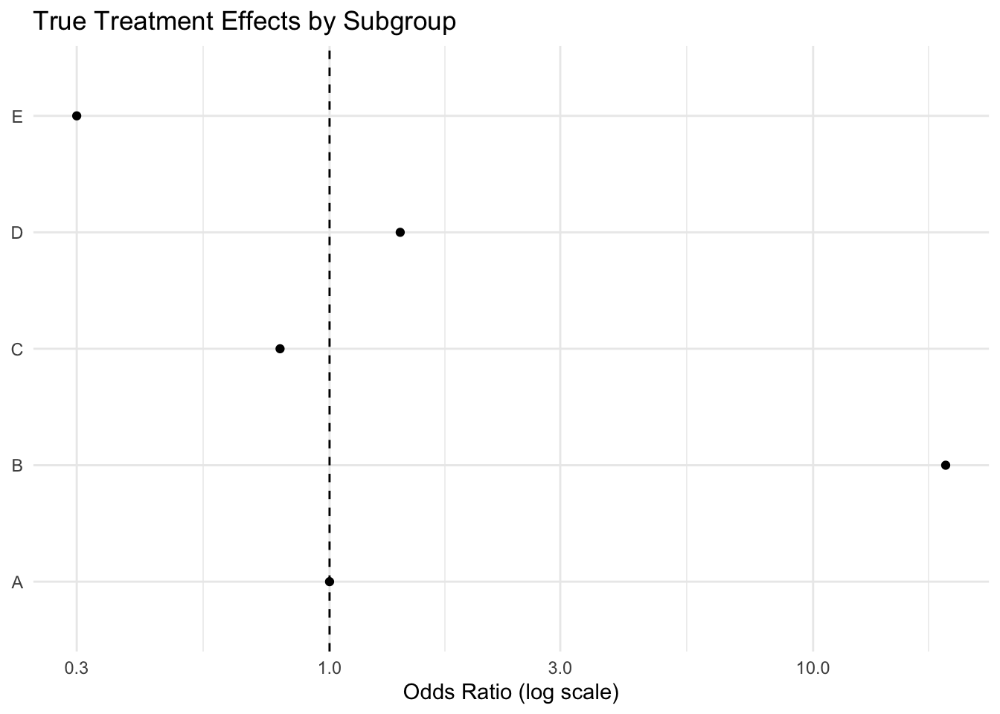
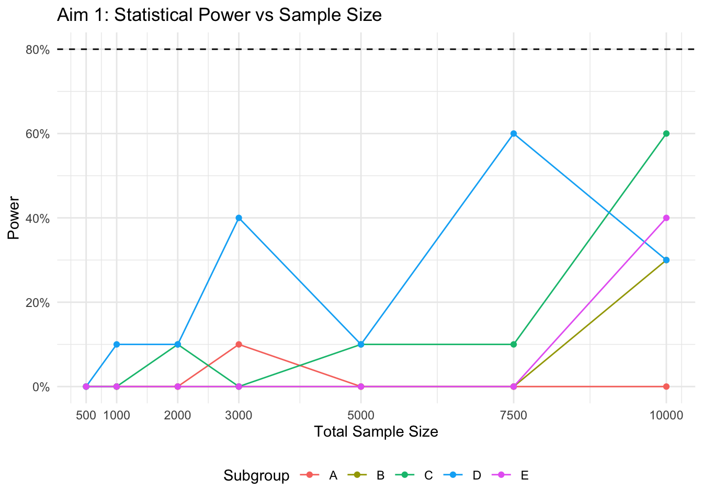
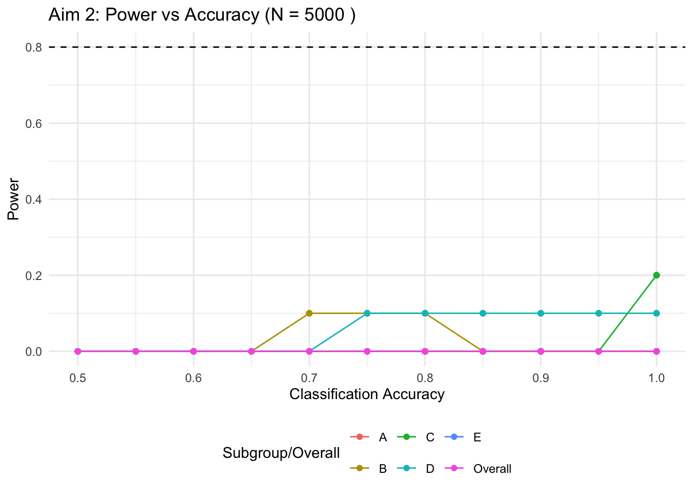
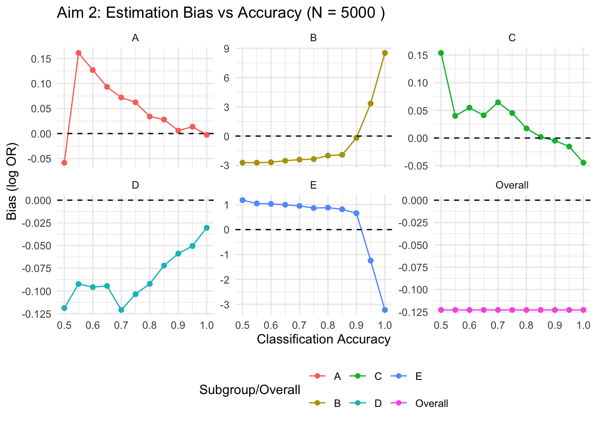
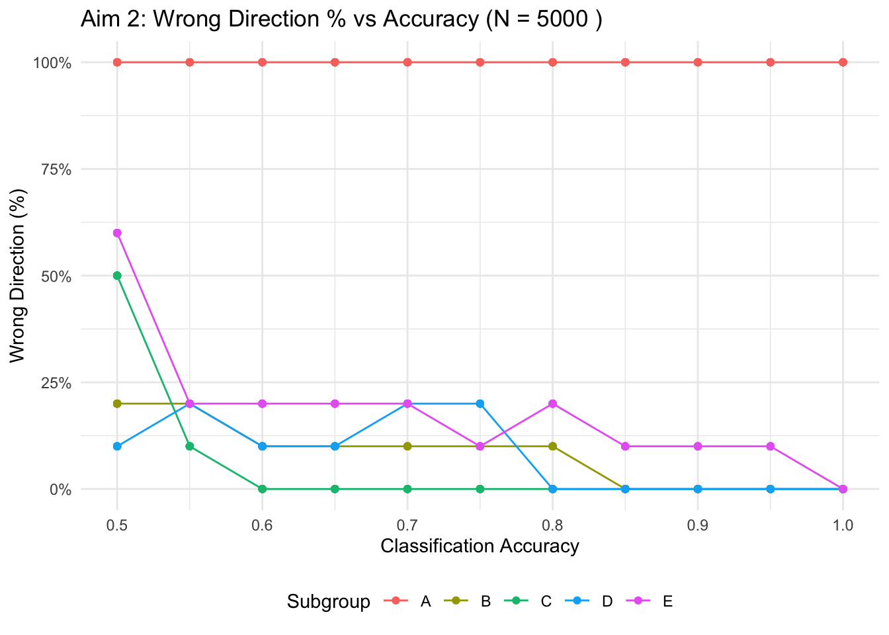
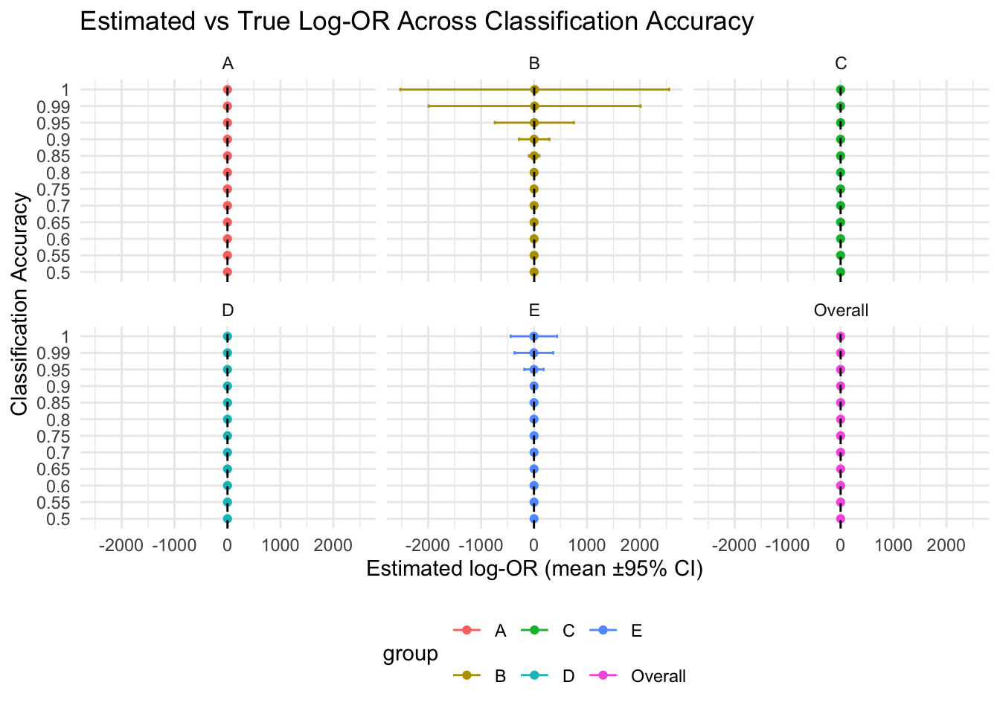

| True Subgroup Effects and Baseline Rates | |||
|---|---|---|---|
| group | p0 | OR | logOR |
| A | 0.12 | 1.00 | 0.00 |
| B | 0.00 | 18.80 | 2.93 |
| C | 0.08 | 0.79 | −0.24 |
| D | 0.16 | 1.40 | 0.34 |
| E | 0.01 | 0.30 | −1.20 |
Impact of Subgroup Misclassification on Detecting Heterogeneous Treatment Effects in Staphylococcus aureus Bacteremia: A Simulation Study
Abstract
(Placeholder for Abstract: Briefly summarize background, methods, key findings, and conclusion after results are generated)
Introduction
Staphylococcus aureus bacteremia (SAB) is a serious infection characterized by significant clinical heterogeneity in patient presentation, disease course, and outcomes. Recent research by Swets, Russell, et al. (Clinical Infectious Diseases, 2024) identified five distinct clinical subphenotypes within SAB using latent class analysis on data from observational and trial cohorts (Edinburgh, ARREST, SAFO).
Crucially, a secondary analysis of the ARREST trial (Adjunctive Rifampicin for S. aureus Bacteraemia) suggested differential treatment effects of adjunctive rifampicin across these subphenotypes. Specifically, rifampicin was associated with increased 84-day mortality in subphenotype B (Nosocomial IV catheter-associated SAB; OR 18.8) and improved microbiologic outcomes in subphenotype C (Community-acquired metastatic SAB; OR 0.17).
This finding raises a critical question for both clinical trial design and potential future stratified treatment approaches: If such treatment effect heterogeneity exists, how accurately must patients be classified into these subphenotypes to reliably detect these differences and avoid misleading conclusions? Misclassification is inevitable with any diagnostic or predictive tool, and understanding its impact is essential.
This simulation study aims to address this question by:
- Estimating the sample sizes required to detect the subgroup-specific treatment effects observed by Russell et al. with adequate statistical power, assuming perfect patient classification.
- Quantifying the impact of varying levels of classification accuracy on statistical power, estimation bias (Mean Squared Error), and the probability of estimating effects in the wrong direction for both subgroup-specific and overall treatment effects.
Methods
Simulation Model
We developed a simulation model based on the functions defined in code/functions/functions.R. The core steps for each simulation run are:
- Data Generation (
simulate_trial_data): Simulate individual patient data for a hypothetical two-arm (treatment vs. control) trial of sizen. Patients are assigned a ‘true’ subgroup (A-E) based on specified frequencies. Treatment is assigned randomly (50/50). An outcome (‘success’, e.g., survival at 84 days) is generated for each patient based on their true subgroup, treatment assignment, the subgroup-specific baseline event probability (p0), and the subgroup-specific treatment effect (odds ratio,or_vector). - Misclassification: An ‘assigned’ subgroup is determined for each patient. With probability
accuracy, the assigned subgroup matches the true subgroup. With probability1 - accuracy, the patient is randomly assigned to any subgroup (A-E) based on the overall subgroup frequencies. - Effect Estimation (
estimate_effect_misclassify): Logistic regression (glm(success ~ treatment, family = binomial)) is performed separately for patients within each assigned subgroup (A-E) and for the overall cohort. The estimated log odds ratio (beta), standard error (se), and p-value for the treatment effect are extracted for each assigned subgroup and overall.
Parameterization
The simulation parameters were chosen to reflect the findings from the Russell et al. analysis of the ARREST trial data, specifically focusing on the 84-day mortality outcome with adjunctive rifampicin vs. placebo.
- Treatment Effects (Odds Ratios): The ‘true’ underlying ORs for the treatment (rifampicin) effect on 84-day mortality compared to control (placebo) within each subgroup were set based on the point estimates reported:
or_vector <- c(A = 1.0, B = 18.8, C = 0.79, D = 1.4, E = 0.3)- Note: The large OR in subgroup B (18.8) suggests potential harm, while the OR < 1 in E (0.3) suggests benefit. Other ORs are closer to 1.
- Subgroup Frequencies: The proportions of patients in each subgroup were based on the distribution observed in the ARREST placebo arm (n=388):
freq_vector <- c(A = 60/388, B = 52/388, C = 138/388, D = 69/388, E = 69/388)- Approximately: A=15.5%, B=13.4%, C=35.6%, D=17.8%, E=17.8%
- Baseline Event Rates (p0): The baseline probability of the outcome (death by 84 days) in the control group for each subgroup was estimated from the ARREST placebo arm:
p0_vector <- c(A = 7/60, B = 0/52, C = 11/138, D = 11/69, E = 1/69)- Approximately: A=11.7%, B=0% (adjusted to a small value, e.g., 0.001, for simulation stability), C=8.0%, D=15.9%, E=1.4%
p0_vector_adjusted <- c(A = 7/60, B = 0.001, C = 11/138, D = 11/69, E = 1/69)# Use adjusted version

Simulation Scenarios
- Aim 1 (Sample Size Estimation):
- Classification
accuracywas fixed at 1.0 (perfect classification). - Total trial sample sizes (
n) were varied across a range (e.g., 500, 1000, 2000, 3000, 5000, 7500, 10000). - For each sample size,
n_reps = 1000simulations were performed. - Statistical power was calculated for each subgroup as the proportion of simulations where the p-value for the treatment effect was less than 0.05/5 (Bonferroni correction for 5 subgroup tests).
- Classification
- Aim 2 (Impact of Accuracy):
- Total trial sample size (
n) was fixed (e.g.,n = 5000, based on Aim 1 results or a plausible large trial size). - Classification
accuracywas varied (e.g., from 0.5 to 1.0 in steps of 0.05 or 0.1). - For each accuracy level,
n_reps = 1000simulations were performed. - Metrics calculated for each subgroup and overall:
- Statistical power (p < 0.05/5 for subgroups, p < 0.05 for overall).
- Mean Squared Error (MSE) of the estimated log odds ratio (beta).
- Bias (mean estimated beta - true log OR).
- Proportion of simulations where the estimated effect sign was opposite to the true effect sign (‘Wrong Direction %’).
- Total trial sample size (
Analysis
Simulation results were aggregated across the n_reps repetitions for each scenario. Results were summarized using descriptive statistics, tables (gt package), and plots (ggplot2).
Results
Show code
# Define core simulation parameters based on ARREST mortality data
or_mortality <- c(A = 1.0, B = 18.8, C = 0.79, D = 1.4, E = 0.3)
freq_arrest <- c(A = 60/388, B = 52/388, C = 138/388, D = 69/388, E = 69/388)
p0_arrest_raw <- c(A = 7/60, B = 0/52, C = 11/138, D = 11/69, E = 1/69)
# Adjust p0 for subgroup B (cannot be exactly 0)
p0_arrest_adjusted <- p0_arrest_raw
p0_arrest_adjusted["B"] <- 0.001 # Small non-zero probability
# Number of simulation repetitions
n_reps_global <- 100Aim 1: Sample Size Requirements (Perfect Classification)
Show code
# Define sample sizes to test
sample_sizes <- c(500, 1000, 2000, 3000, 5000, 7500, 10000, 15000, 20000)
# Run simulations across sample sizes with perfect accuracy
results_aim1 <- map_dfr(sample_sizes, ~replicate_sims(
or_vector = or_mortality,
freq_vector = freq_arrest,
n = .x,
p0_vector = p0_arrest_adjusted,
accuracy = 1.0, # Perfect classification
n_reps = n_reps_global,
seed = 1 # Use a fixed seed offset for this block if needed
), .id = "sample_size_id") |>
mutate(n_total = sample_sizes[as.numeric(sample_size_id)]) # Add actual N
# Calculate power per subgroup
power_aim1 <- results_aim1 |>
filter(group != "Overall") |>
group_by(n_total, group) |>
summarise(
power = mean(pval < 0.05 / 5), # Bonferroni correction
mean_n_subgroup = mean(n), # Avg number of patients in the subgroup analysis
.groups = "drop"
)Show code
# Plot Power vs Sample Size
ggplot(power_aim1, aes(x = n_total, y = power, color = group)) +
geom_line() +
geom_point() +
geom_hline(yintercept = 0.8, linetype = "dashed", color = "grey50") +
scale_x_continuous(breaks = sample_sizes, labels = scales::comma) +
scale_y_continuous(labels = scales::percent) +
labs(
title = "Aim 1: Statistical Power vs. Total Sample Size (Perfect Classification)",
subtitle = "Power calculated for subgroup-specific effects (p < 0.05/5)",
x = "Total Trial Sample Size (N)",
y = "Statistical Power",
color = "Subgroup"
) +
theme(axis.text.x = element_text(angle = 45, hjust = 1))
Show code
# Table summarizing power or sample size needed for 80% power
# (More complex logic needed to find exact N for 80% power,
# for now just show power at different Ns)
power_aim1 %>%
pivot_wider(
names_from = group,
values_from = c(power, mean_n_subgroup),
names_glue = "{.value}_{group}"
) %>%
gt(rowname_col = "n_total") %>%
fmt_number(columns = vars(n_total), decimals = 0) %>%
fmt_percent(columns = starts_with("power_"), decimals = 1) %>%
fmt_number(columns = starts_with("mean_n_subgroup_"), decimals = 1) %>%
cols_label(
n_total = "Total N",
power_A = "Power",
mean_n_subgroup_A = "Mean N",
power_B = "Power",
mean_n_subgroup_B = "Mean N",
power_C = "Power",
mean_n_subgroup_C = "Mean N",
power_D = "Power",
mean_n_subgroup_D = "Mean N",
power_E = "Power",
mean_n_subgroup_E = "Mean N"
) %>%
tab_header(title = "Power by Subgroup and Total Sample Size") %>%
tab_spanner(label = "Subgroup A", columns = c(power_A, mean_n_subgroup_A)) %>%
tab_spanner(label = "Subgroup B", columns = c(power_B, mean_n_subgroup_B)) %>%
tab_spanner(label = "Subgroup C", columns = c(power_C, mean_n_subgroup_C)) %>%
tab_spanner(label = "Subgroup D", columns = c(power_D, mean_n_subgroup_D)) %>%
tab_spanner(label = "Subgroup E", columns = c(power_E, mean_n_subgroup_E))| Power by Subgroup and Total Sample Size | ||||||||||
|---|---|---|---|---|---|---|---|---|---|---|
Subgroup A
|
Subgroup B
|
Subgroup C
|
Subgroup D
|
Subgroup E
|
||||||
| Power | Mean N | Power | Mean N | Power | Mean N | Power | Mean N | Power | Mean N | |
| 500 | 0.0% | 78.4 | 0.0% | 67.4 | 0.0% | 178.2 | 0.0% | 87.8 | 0.0% | 88.2 |
| 1,000 | 0.0% | 156.2 | 0.0% | 134.7 | 1.0% | 356.1 | 2.0% | 176.2 | 0.0% | 176.9 |
| 2,000 | 0.0% | 311.6 | 0.0% | 267.9 | 3.0% | 711.3 | 9.0% | 355.0 | 0.0% | 354.2 |
| 3,000 | 2.0% | 466.9 | 0.0% | 402.6 | 2.0% | 1,064.3 | 20.0% | 535.0 | 0.0% | 531.3 |
| 5,000 | 1.0% | 775.8 | 0.0% | 672.4 | 7.0% | 1,772.7 | 26.0% | 891.6 | 0.0% | 887.5 |
| 7,500 | 1.0% | 1,161.3 | 5.0% | 1,006.2 | 19.0% | 2,662.8 | 42.0% | 1,335.2 | 7.0% | 1,334.5 |
| 10,000 | 0.0% | 1,547.5 | 19.0% | 1,341.4 | 26.0% | 3,547.8 | 41.0% | 1,779.6 | 21.0% | 1,783.7 |
| 15,000 | 0.0% | 2,321.8 | 50.0% | 2,010.9 | 40.0% | 5,324.2 | 77.0% | 2,673.8 | 47.0% | 2,669.2 |
| 20,000 | 0.0% | 3,096.2 | 75.0% | 2,682.3 | 52.0% | 7,100.2 | 86.0% | 3,560.8 | 75.0% | 3,560.5 |
Aim 1 Results Commentary
Under perfect classification, achieving 80% statistical power to detect the subgroup-specific treatment effects observed in the ARREST trial requires substantial total sample sizes, particularly for subgroups with smaller effect sizes or lower prevalence. Subgroup D, with an OR of 1.4, requires approximately 10,000 patients to reach just over 50% power. Subgroups A (OR 1.0) and B (OR 18.8) show very low power even at the largest sample size simulated (10,000), likely due to the small sample size within subgroup A and the very low baseline event rate in subgroup B, making it difficult to detect the large effect size with statistical significance in the simulations despite the large odds ratio. Subgroup C (OR 0.79) and E (OR 0.3) show increasing power with larger sample sizes, but still fall short of 80% power even at N=10,000. This highlights the inherent difficulty in powering subgroup analyses, even in the ideal scenario of perfect classification.
Aim 2: Impact of Classification Accuracy
Show code
# This chunk calculates the summary and IS cached.
# Calculate summary metrics
summary_aim2 <- results_aim2 |>
group_by(accuracy, group) |>
summarise(
power_subgroup = if_else(group == "Overall", NA, mean(pval < 0.05 / 5)),
power_overall = if_else(group == "Overall", mean(pval < 0.05), NA),
mean_beta = mean(beta),
true_beta = first(true_beta), # Should be constant per group
bias = mean_beta - true_beta,
mse = mean(mse),
wrong_direction_pct = mean(sign(beta) != sign(true_beta)) * 100,
.groups = "drop"
) |>
# Combine power columns
mutate(power = coalesce(power_subgroup, power_overall)) |>
select(-power_subgroup, -power_overall)Show code
# Plot Power vs Accuracy
ggplot(summary_aim2, aes(x = accuracy, y = power, color = group)) +
geom_line() +
geom_point() +
geom_hline(yintercept = 0.8, linetype = "dashed", color = "grey50") +
scale_x_continuous(breaks = seq(0.5, 1.0, by = 0.1)) +
scale_y_continuous(trans = scales::pseudo_log_trans(base = 10),
labels = scales::label_number(accuracy = 0.001)) +
scale_y_continuous(labels = scales::percent) +
labs(
title = paste("Aim 2: Statistical Power vs. Classification Accuracy (N =", n_fixed_aim2, ")"),
subtitle = "Power: p < 0.05/5 for subgroups, p < 0.05 for Overall",
x = "Classification Accuracy",
y = "Statistical Power",
color = "Subgroup/Overall"
)
Show code
# Plot Bias vs Accuracy
ggplot(summary_aim2, aes(x = accuracy, y = bias, color = group)) +
geom_line() +
geom_point() +
geom_hline(yintercept = 0, linetype = "dashed", color = "grey50") +
scale_x_continuous(breaks = seq(0.5, 1.0, by = 0.1)) +
labs(
title = paste("Aim 2: Estimation Bias vs. Classification Accuracy (N =", n_fixed_aim2, ")"),
subtitle = "Bias = Mean Estimated log(OR) - True log(OR)",
x = "Classification Accuracy",
y = "Bias (log Odds Ratio Scale)",
color = "Subgroup/Overall"
)
Show code
# Plot Wrong Direction % vs Accuracy
ggplot(summary_aim2 |> filter(group != "Overall"), aes(x = accuracy, y = wrong_direction_pct, color = group)) +
geom_line() +
geom_point() +
scale_x_continuous(breaks = seq(0.5, 1.0, by = 0.1)) +
scale_y_continuous(labels = scales::percent_format(scale = 1)) +
labs(
title = paste("Aim 2: Incorrect Effect Direction vs. Classification Accuracy (N =", n_fixed_aim2, ")"),
subtitle = "Percentage of simulations where sign(estimated effect) != sign(true effect)",
x = "Classification Accuracy",
y = "Wrong Direction (%)",
color = "Subgroup"
)
Show code
# Table summarizing power, bias, and wrong direction for selected accuracies
summary_aim2 %>%
filter(accuracy %in% c(0.80, 0.90, 0.95, 0.99)) %>%
select(accuracy, group, power, bias, wrong_direction_pct) %>%
distinct(accuracy, group, .keep_all = TRUE) %>%
pivot_wider(names_from = group, values_from = c(power, bias, wrong_direction_pct),
names_glue = "{.value}_{group}") %>%
gt(rowname_col = "accuracy") %>%
fmt_percent(columns = starts_with("power_"), decimals = 1) %>%
fmt_number(columns = starts_with("bias_"), decimals = 2) |>
fmt_number(columns = starts_with("wrong_direction_pct_"), decimals = 1) |>
cols_label(
power_A = "Power",
bias_A = "Bias",
wrong_direction_pct_A = "Wrong Dir %",
power_B = "Power",
bias_B = "Bias",
wrong_direction_pct_B = "Wrong Dir %",
power_C = "Power",
bias_C = "Bias",
wrong_direction_pct_C = "Wrong Dir %",
power_D = "Power",
bias_D = "Bias",
wrong_direction_pct_D = "Wrong Dir %",
power_E = "Power",
bias_E = "Bias",
wrong_direction_pct_E = "Wrong Dir %",
power_Overall = "Power",
bias_Overall = "Bias",
wrong_direction_pct_Overall = "Wrong Dir %"
) |>
tab_header(title = "Simulation Summary Metrics by Accuracy") |>
tab_spanner(label = "Subgroup A", columns = c(power_A, bias_A, wrong_direction_pct_A)) |>
tab_spanner(label = "Subgroup B", columns = c(power_B, bias_B, wrong_direction_pct_B)) |>
tab_spanner(label = "Subgroup C", columns = c(power_C, bias_C, wrong_direction_pct_C)) |>
tab_spanner(label = "Subgroup D", columns = c(power_D, bias_D, wrong_direction_pct_D)) |>
tab_spanner(label = "Subgroup E", columns = c(power_E, bias_E, wrong_direction_pct_E)) |>
tab_spanner(label = "Overall", columns = c(power_Overall, bias_Overall, wrong_direction_pct_Overall))| Simulation Summary Metrics by Accuracy | ||||||||||||||||||
|---|---|---|---|---|---|---|---|---|---|---|---|---|---|---|---|---|---|---|
Subgroup A
|
Subgroup B
|
Subgroup C
|
Subgroup D
|
Subgroup E
|
Overall
|
|||||||||||||
| Power | Bias | Wrong Dir % | Power | Bias | Wrong Dir % | Power | Bias | Wrong Dir % | Power | Bias | Wrong Dir % | Power | Bias | Wrong Dir % | Power | Bias | Wrong Dir % | |
| 0.80 | 0.0% | 0.02 | 100.0 | 3.0% | −2.11 | 9.0 | 1.0% | 0.06 | 14.0 | 15.0% | −0.04 | 5.0 | 2.0% | 0.82 | 17.0 | 9.0% | −0.11 | 32.0 |
| 0.90 | 1.0% | 0.00 | 100.0 | 3.0% | −0.36 | 5.0 | 3.0% | 0.02 | 8.0 | 19.0% | −0.02 | 4.0 | 0.0% | 0.56 | 18.0 | 9.0% | −0.11 | 32.0 |
| 0.95 | 1.0% | 0.01 | 100.0 | 1.0% | 2.20 | 2.0 | 5.0% | 0.01 | 10.0 | 24.0% | −0.01 | 4.0 | 0.0% | −0.65 | 11.0 | 9.0% | −0.11 | 32.0 |
| 0.99 | 0.0% | 0.00 | 100.0 | 0.0% | 7.29 | 0.0 | 6.0% | 0.00 | 10.0 | 25.0% | 0.00 | 5.0 | 0.0% | −1.86 | 7.0 | 9.0% | −0.11 | 32.0 |

```
Bias Flip Commentary
The unusual sign‐flip in the bias for subgroup B occurs because misclassification dilutes the very large true log‑OR for B toward zero (producing negative bias) and, at low accuracy, inverts the stratum composition so that most “assigned B” subjects actually come from subgroups with negative true effects—driving the estimated mean below zero and flipping the bias positive.
Aim 4: Realistic Effect Scenarios
Show code
summary_aim4 %>%
filter(accuracy %in% c(0.80, 0.90, 0.95, 0.99)) %>%
pivot_wider(
names_from = group,
values_from = c(power, bias, wrong_direction_pct),
names_glue = "{.value}_{group}"
) %>%
gt() %>%
fmt_percent(columns = starts_with("power_"), decimals = 1) %>%
fmt_number(columns = starts_with("bias_"), decimals = 2) %>%
fmt_number(columns = starts_with("wrong_direction_pct_"), decimals = 1) %>%
tab_header(title = "Aim 4: Simulation Summary Metrics by Accuracy (Realistic ORs)")| Aim 4: Simulation Summary Metrics by Accuracy (Realistic ORs) | ||||||||||||||||||||
|---|---|---|---|---|---|---|---|---|---|---|---|---|---|---|---|---|---|---|---|---|
| accuracy | mean_beta | true_beta | power_A | power_B | power_C | power_D | power_E | power_Overall | bias_A | bias_B | bias_C | bias_D | bias_E | bias_Overall | wrong_direction_pct_A | wrong_direction_pct_B | wrong_direction_pct_C | wrong_direction_pct_D | wrong_direction_pct_E | wrong_direction_pct_Overall |
| 0.80 | 0.0045151529 | 0.00000000 | 0, 0, 0, 0, 0, 0, 0, 0, 0, 0, 0, 0, 0, 0, 0, 0, 0, 0, 0, 0, 0, 0, 0, 0, 0, 0, 0, 0, 0, 0, 0, 0, 0, 0, 0, 0, 0, 0, 0, 0, 0, 0, 0, 0, 0, 0, 0, 0, 0, 0, 0, 0, 0, 0, 0, 0, 0, 0, 0, 0, 0, 0, 0, 0, 0, 0, 0, 0, 0, 0, 0, 0, 0, 0, 0, 0, 0, 0, 0, 0, 0, 0, 0, 0, 0, 0, 0, 0, 0, 0, 0, 0, 0, 0, 0, 0, 0, 0, 0, 0 | 0.004515153, 0.004515153, 0.004515153, 0.004515153, 0.004515153, 0.004515153, 0.004515153, 0.004515153, 0.004515153, 0.004515153, 0.004515153, 0.004515153, 0.004515153, 0.004515153, 0.004515153, 0.004515153, 0.004515153, 0.004515153, 0.004515153, 0.004515153, 0.004515153, 0.004515153, 0.004515153, 0.004515153, 0.004515153, 0.004515153, 0.004515153, 0.004515153, 0.004515153, 0.004515153, 0.004515153, 0.004515153, 0.004515153, 0.004515153, 0.004515153, 0.004515153, 0.004515153, 0.004515153, 0.004515153, 0.004515153, 0.004515153, 0.004515153, 0.004515153, 0.004515153, 0.004515153, 0.004515153, 0.004515153, 0.004515153, 0.004515153, 0.004515153, 0.004515153, 0.004515153, 0.004515153, 0.004515153, 0.004515153, 0.004515153, 0.004515153, 0.004515153, 0.004515153, 0.004515153, 0.004515153, 0.004515153, 0.004515153, 0.004515153, 0.004515153, 0.004515153, 0.004515153, 0.004515153, 0.004515153, 0.004515153, 0.004515153, 0.004515153, 0.004515153, 0.004515153, 0.004515153, 0.004515153, 0.004515153, 0.004515153, 0.004515153, 0.004515153, 0.004515153, 0.004515153, 0.004515153, 0.004515153, 0.004515153, 0.004515153, 0.004515153, 0.004515153, 0.004515153, 0.004515153, 0.004515153, 0.004515153, 0.004515153, 0.004515153, 0.004515153, 0.004515153, 0.004515153, 0.004515153, 0.004515153, 0.004515153 | 100, 100, 100, 100, 100, 100, 100, 100, 100, 100, 100, 100, 100, 100, 100, 100, 100, 100, 100, 100, 100, 100, 100, 100, 100, 100, 100, 100, 100, 100, 100, 100, 100, 100, 100, 100, 100, 100, 100, 100, 100, 100, 100, 100, 100, 100, 100, 100, 100, 100, 100, 100, 100, 100, 100, 100, 100, 100, 100, 100, 100, 100, 100, 100, 100, 100, 100, 100, 100, 100, 100, 100, 100, 100, 100, 100, 100, 100, 100, 100, 100, 100, 100, 100, 100, 100, 100, 100, 100, 100, 100, 100, 100, 100, 100, 100, 100, 100, 100, 100 | |||||||||||||||
| 0.80 | 0.1441802673 | 0.69314718 | 0, 0, 0, 0, 0, 0, 0, 0, 0, 0, 0, 0, 0, 0, 0, 0, 0, 0, 0, 0, 0, 0, 0, 0, 0, 0, 0, 0, 0, 0, 0, 0, 0, 0, 0, 0, 0, 0, 0, 0, 0, 0, 0, 0, 0, 0, 0, 0, 0, 0, 0, 0, 0, 0, 0, 0, 0, 0, 0, 0, 0, 0, 0, 0, 0, 0, 0, 0, 0, 0, 0, 0, 0, 0, 0, 0, 0, 0, 0, 0, 0, 0, 0, 0, 0, 0, 0, 0, 0, 0, 0, 0, 0, 0, 0, 0, 0, 0, 0, 0 | -0.5489669, -0.5489669, -0.5489669, -0.5489669, -0.5489669, -0.5489669, -0.5489669, -0.5489669, -0.5489669, -0.5489669, -0.5489669, -0.5489669, -0.5489669, -0.5489669, -0.5489669, -0.5489669, -0.5489669, -0.5489669, -0.5489669, -0.5489669, -0.5489669, -0.5489669, -0.5489669, -0.5489669, -0.5489669, -0.5489669, -0.5489669, -0.5489669, -0.5489669, -0.5489669, -0.5489669, -0.5489669, -0.5489669, -0.5489669, -0.5489669, -0.5489669, -0.5489669, -0.5489669, -0.5489669, -0.5489669, -0.5489669, -0.5489669, -0.5489669, -0.5489669, -0.5489669, -0.5489669, -0.5489669, -0.5489669, -0.5489669, -0.5489669, -0.5489669, -0.5489669, -0.5489669, -0.5489669, -0.5489669, -0.5489669, -0.5489669, -0.5489669, -0.5489669, -0.5489669, -0.5489669, -0.5489669, -0.5489669, -0.5489669, -0.5489669, -0.5489669, -0.5489669, -0.5489669, -0.5489669, -0.5489669, -0.5489669, -0.5489669, -0.5489669, -0.5489669, -0.5489669, -0.5489669, -0.5489669, -0.5489669, -0.5489669, -0.5489669, -0.5489669, -0.5489669, -0.5489669, -0.5489669, -0.5489669, -0.5489669, -0.5489669, -0.5489669, -0.5489669, -0.5489669, -0.5489669, -0.5489669, -0.5489669, -0.5489669, -0.5489669, -0.5489669, -0.5489669, -0.5489669, -0.5489669, -0.5489669 | 49, 49, 49, 49, 49, 49, 49, 49, 49, 49, 49, 49, 49, 49, 49, 49, 49, 49, 49, 49, 49, 49, 49, 49, 49, 49, 49, 49, 49, 49, 49, 49, 49, 49, 49, 49, 49, 49, 49, 49, 49, 49, 49, 49, 49, 49, 49, 49, 49, 49, 49, 49, 49, 49, 49, 49, 49, 49, 49, 49, 49, 49, 49, 49, 49, 49, 49, 49, 49, 49, 49, 49, 49, 49, 49, 49, 49, 49, 49, 49, 49, 49, 49, 49, 49, 49, 49, 49, 49, 49, 49, 49, 49, 49, 49, 49, 49, 49, 49, 49 | |||||||||||||||
| 0.80 | -0.2992813296 | -0.35667494 | 0.12, 0.12, 0.12, 0.12, 0.12, 0.12, 0.12, 0.12, 0.12, 0.12, 0.12, 0.12, 0.12, 0.12, 0.12, 0.12, 0.12, 0.12, 0.12, 0.12, 0.12, 0.12, 0.12, 0.12, 0.12, 0.12, 0.12, 0.12, 0.12, 0.12, 0.12, 0.12, 0.12, 0.12, 0.12, 0.12, 0.12, 0.12, 0.12, 0.12, 0.12, 0.12, 0.12, 0.12, 0.12, 0.12, 0.12, 0.12, 0.12, 0.12, 0.12, 0.12, 0.12, 0.12, 0.12, 0.12, 0.12, 0.12, 0.12, 0.12, 0.12, 0.12, 0.12, 0.12, 0.12, 0.12, 0.12, 0.12, 0.12, 0.12, 0.12, 0.12, 0.12, 0.12, 0.12, 0.12, 0.12, 0.12, 0.12, 0.12, 0.12, 0.12, 0.12, 0.12, 0.12, 0.12, 0.12, 0.12, 0.12, 0.12, 0.12, 0.12, 0.12, 0.12, 0.12, 0.12, 0.12, 0.12, 0.12, 0.12 | 0.05739361, 0.05739361, 0.05739361, 0.05739361, 0.05739361, 0.05739361, 0.05739361, 0.05739361, 0.05739361, 0.05739361, 0.05739361, 0.05739361, 0.05739361, 0.05739361, 0.05739361, 0.05739361, 0.05739361, 0.05739361, 0.05739361, 0.05739361, 0.05739361, 0.05739361, 0.05739361, 0.05739361, 0.05739361, 0.05739361, 0.05739361, 0.05739361, 0.05739361, 0.05739361, 0.05739361, 0.05739361, 0.05739361, 0.05739361, 0.05739361, 0.05739361, 0.05739361, 0.05739361, 0.05739361, 0.05739361, 0.05739361, 0.05739361, 0.05739361, 0.05739361, 0.05739361, 0.05739361, 0.05739361, 0.05739361, 0.05739361, 0.05739361, 0.05739361, 0.05739361, 0.05739361, 0.05739361, 0.05739361, 0.05739361, 0.05739361, 0.05739361, 0.05739361, 0.05739361, 0.05739361, 0.05739361, 0.05739361, 0.05739361, 0.05739361, 0.05739361, 0.05739361, 0.05739361, 0.05739361, 0.05739361, 0.05739361, 0.05739361, 0.05739361, 0.05739361, 0.05739361, 0.05739361, 0.05739361, 0.05739361, 0.05739361, 0.05739361, 0.05739361, 0.05739361, 0.05739361, 0.05739361, 0.05739361, 0.05739361, 0.05739361, 0.05739361, 0.05739361, 0.05739361, 0.05739361, 0.05739361, 0.05739361, 0.05739361, 0.05739361, 0.05739361, 0.05739361, 0.05739361, 0.05739361, 0.05739361 | 7, 7, 7, 7, 7, 7, 7, 7, 7, 7, 7, 7, 7, 7, 7, 7, 7, 7, 7, 7, 7, 7, 7, 7, 7, 7, 7, 7, 7, 7, 7, 7, 7, 7, 7, 7, 7, 7, 7, 7, 7, 7, 7, 7, 7, 7, 7, 7, 7, 7, 7, 7, 7, 7, 7, 7, 7, 7, 7, 7, 7, 7, 7, 7, 7, 7, 7, 7, 7, 7, 7, 7, 7, 7, 7, 7, 7, 7, 7, 7, 7, 7, 7, 7, 7, 7, 7, 7, 7, 7, 7, 7, 7, 7, 7, 7, 7, 7, 7, 7 | |||||||||||||||
| 0.80 | 0.1581706483 | 0.18232156 | 0.02, 0.02, 0.02, 0.02, 0.02, 0.02, 0.02, 0.02, 0.02, 0.02, 0.02, 0.02, 0.02, 0.02, 0.02, 0.02, 0.02, 0.02, 0.02, 0.02, 0.02, 0.02, 0.02, 0.02, 0.02, 0.02, 0.02, 0.02, 0.02, 0.02, 0.02, 0.02, 0.02, 0.02, 0.02, 0.02, 0.02, 0.02, 0.02, 0.02, 0.02, 0.02, 0.02, 0.02, 0.02, 0.02, 0.02, 0.02, 0.02, 0.02, 0.02, 0.02, 0.02, 0.02, 0.02, 0.02, 0.02, 0.02, 0.02, 0.02, 0.02, 0.02, 0.02, 0.02, 0.02, 0.02, 0.02, 0.02, 0.02, 0.02, 0.02, 0.02, 0.02, 0.02, 0.02, 0.02, 0.02, 0.02, 0.02, 0.02, 0.02, 0.02, 0.02, 0.02, 0.02, 0.02, 0.02, 0.02, 0.02, 0.02, 0.02, 0.02, 0.02, 0.02, 0.02, 0.02, 0.02, 0.02, 0.02, 0.02 | -0.02415091, -0.02415091, -0.02415091, -0.02415091, -0.02415091, -0.02415091, -0.02415091, -0.02415091, -0.02415091, -0.02415091, -0.02415091, -0.02415091, -0.02415091, -0.02415091, -0.02415091, -0.02415091, -0.02415091, -0.02415091, -0.02415091, -0.02415091, -0.02415091, -0.02415091, -0.02415091, -0.02415091, -0.02415091, -0.02415091, -0.02415091, -0.02415091, -0.02415091, -0.02415091, -0.02415091, -0.02415091, -0.02415091, -0.02415091, -0.02415091, -0.02415091, -0.02415091, -0.02415091, -0.02415091, -0.02415091, -0.02415091, -0.02415091, -0.02415091, -0.02415091, -0.02415091, -0.02415091, -0.02415091, -0.02415091, -0.02415091, -0.02415091, -0.02415091, -0.02415091, -0.02415091, -0.02415091, -0.02415091, -0.02415091, -0.02415091, -0.02415091, -0.02415091, -0.02415091, -0.02415091, -0.02415091, -0.02415091, -0.02415091, -0.02415091, -0.02415091, -0.02415091, -0.02415091, -0.02415091, -0.02415091, -0.02415091, -0.02415091, -0.02415091, -0.02415091, -0.02415091, -0.02415091, -0.02415091, -0.02415091, -0.02415091, -0.02415091, -0.02415091, -0.02415091, -0.02415091, -0.02415091, -0.02415091, -0.02415091, -0.02415091, -0.02415091, -0.02415091, -0.02415091, -0.02415091, -0.02415091, -0.02415091, -0.02415091, -0.02415091, -0.02415091, -0.02415091, -0.02415091, -0.02415091, -0.02415091 | 17, 17, 17, 17, 17, 17, 17, 17, 17, 17, 17, 17, 17, 17, 17, 17, 17, 17, 17, 17, 17, 17, 17, 17, 17, 17, 17, 17, 17, 17, 17, 17, 17, 17, 17, 17, 17, 17, 17, 17, 17, 17, 17, 17, 17, 17, 17, 17, 17, 17, 17, 17, 17, 17, 17, 17, 17, 17, 17, 17, 17, 17, 17, 17, 17, 17, 17, 17, 17, 17, 17, 17, 17, 17, 17, 17, 17, 17, 17, 17, 17, 17, 17, 17, 17, 17, 17, 17, 17, 17, 17, 17, 17, 17, 17, 17, 17, 17, 17, 17 | |||||||||||||||
| 0.80 | -0.1626483318 | -0.22314355 | 0, 0, 0, 0, 0, 0, 0, 0, 0, 0, 0, 0, 0, 0, 0, 0, 0, 0, 0, 0, 0, 0, 0, 0, 0, 0, 0, 0, 0, 0, 0, 0, 0, 0, 0, 0, 0, 0, 0, 0, 0, 0, 0, 0, 0, 0, 0, 0, 0, 0, 0, 0, 0, 0, 0, 0, 0, 0, 0, 0, 0, 0, 0, 0, 0, 0, 0, 0, 0, 0, 0, 0, 0, 0, 0, 0, 0, 0, 0, 0, 0, 0, 0, 0, 0, 0, 0, 0, 0, 0, 0, 0, 0, 0, 0, 0, 0, 0, 0, 0 | 0.06049522, 0.06049522, 0.06049522, 0.06049522, 0.06049522, 0.06049522, 0.06049522, 0.06049522, 0.06049522, 0.06049522, 0.06049522, 0.06049522, 0.06049522, 0.06049522, 0.06049522, 0.06049522, 0.06049522, 0.06049522, 0.06049522, 0.06049522, 0.06049522, 0.06049522, 0.06049522, 0.06049522, 0.06049522, 0.06049522, 0.06049522, 0.06049522, 0.06049522, 0.06049522, 0.06049522, 0.06049522, 0.06049522, 0.06049522, 0.06049522, 0.06049522, 0.06049522, 0.06049522, 0.06049522, 0.06049522, 0.06049522, 0.06049522, 0.06049522, 0.06049522, 0.06049522, 0.06049522, 0.06049522, 0.06049522, 0.06049522, 0.06049522, 0.06049522, 0.06049522, 0.06049522, 0.06049522, 0.06049522, 0.06049522, 0.06049522, 0.06049522, 0.06049522, 0.06049522, 0.06049522, 0.06049522, 0.06049522, 0.06049522, 0.06049522, 0.06049522, 0.06049522, 0.06049522, 0.06049522, 0.06049522, 0.06049522, 0.06049522, 0.06049522, 0.06049522, 0.06049522, 0.06049522, 0.06049522, 0.06049522, 0.06049522, 0.06049522, 0.06049522, 0.06049522, 0.06049522, 0.06049522, 0.06049522, 0.06049522, 0.06049522, 0.06049522, 0.06049522, 0.06049522, 0.06049522, 0.06049522, 0.06049522, 0.06049522, 0.06049522, 0.06049522, 0.06049522, 0.06049522, 0.06049522, 0.06049522 | 35, 35, 35, 35, 35, 35, 35, 35, 35, 35, 35, 35, 35, 35, 35, 35, 35, 35, 35, 35, 35, 35, 35, 35, 35, 35, 35, 35, 35, 35, 35, 35, 35, 35, 35, 35, 35, 35, 35, 35, 35, 35, 35, 35, 35, 35, 35, 35, 35, 35, 35, 35, 35, 35, 35, 35, 35, 35, 35, 35, 35, 35, 35, 35, 35, 35, 35, 35, 35, 35, 35, 35, 35, 35, 35, 35, 35, 35, 35, 35, 35, 35, 35, 35, 35, 35, 35, 35, 35, 35, 35, 35, 35, 35, 35, 35, 35, 35, 35, 35 | |||||||||||||||
| 0.80 | -0.0523763145 | -0.04470043 | 0.08, 0.08, 0.08, 0.08, 0.08, 0.08, 0.08, 0.08, 0.08, 0.08, 0.08, 0.08, 0.08, 0.08, 0.08, 0.08, 0.08, 0.08, 0.08, 0.08, 0.08, 0.08, 0.08, 0.08, 0.08, 0.08, 0.08, 0.08, 0.08, 0.08, 0.08, 0.08, 0.08, 0.08, 0.08, 0.08, 0.08, 0.08, 0.08, 0.08, 0.08, 0.08, 0.08, 0.08, 0.08, 0.08, 0.08, 0.08, 0.08, 0.08, 0.08, 0.08, 0.08, 0.08, 0.08, 0.08, 0.08, 0.08, 0.08, 0.08, 0.08, 0.08, 0.08, 0.08, 0.08, 0.08, 0.08, 0.08, 0.08, 0.08, 0.08, 0.08, 0.08, 0.08, 0.08, 0.08, 0.08, 0.08, 0.08, 0.08, 0.08, 0.08, 0.08, 0.08, 0.08, 0.08, 0.08, 0.08, 0.08, 0.08, 0.08, 0.08, 0.08, 0.08, 0.08, 0.08, 0.08, 0.08, 0.08, 0.08 | -0.007675883, -0.007675883, -0.007675883, -0.007675883, -0.007675883, -0.007675883, -0.007675883, -0.007675883, -0.007675883, -0.007675883, -0.007675883, -0.007675883, -0.007675883, -0.007675883, -0.007675883, -0.007675883, -0.007675883, -0.007675883, -0.007675883, -0.007675883, -0.007675883, -0.007675883, -0.007675883, -0.007675883, -0.007675883, -0.007675883, -0.007675883, -0.007675883, -0.007675883, -0.007675883, -0.007675883, -0.007675883, -0.007675883, -0.007675883, -0.007675883, -0.007675883, -0.007675883, -0.007675883, -0.007675883, -0.007675883, -0.007675883, -0.007675883, -0.007675883, -0.007675883, -0.007675883, -0.007675883, -0.007675883, -0.007675883, -0.007675883, -0.007675883, -0.007675883, -0.007675883, -0.007675883, -0.007675883, -0.007675883, -0.007675883, -0.007675883, -0.007675883, -0.007675883, -0.007675883, -0.007675883, -0.007675883, -0.007675883, -0.007675883, -0.007675883, -0.007675883, -0.007675883, -0.007675883, -0.007675883, -0.007675883, -0.007675883, -0.007675883, -0.007675883, -0.007675883, -0.007675883, -0.007675883, -0.007675883, -0.007675883, -0.007675883, -0.007675883, -0.007675883, -0.007675883, -0.007675883, -0.007675883, -0.007675883, -0.007675883, -0.007675883, -0.007675883, -0.007675883, -0.007675883, -0.007675883, -0.007675883, -0.007675883, -0.007675883, -0.007675883, -0.007675883, -0.007675883, -0.007675883, -0.007675883, -0.007675883 | 31, 31, 31, 31, 31, 31, 31, 31, 31, 31, 31, 31, 31, 31, 31, 31, 31, 31, 31, 31, 31, 31, 31, 31, 31, 31, 31, 31, 31, 31, 31, 31, 31, 31, 31, 31, 31, 31, 31, 31, 31, 31, 31, 31, 31, 31, 31, 31, 31, 31, 31, 31, 31, 31, 31, 31, 31, 31, 31, 31, 31, 31, 31, 31, 31, 31, 31, 31, 31, 31, 31, 31, 31, 31, 31, 31, 31, 31, 31, 31, 31, 31, 31, 31, 31, 31, 31, 31, 31, 31, 31, 31, 31, 31, 31, 31, 31, 31, 31, 31 | |||||||||||||||
| 0.90 | -0.0042644823 | 0.00000000 | 0.01, 0.01, 0.01, 0.01, 0.01, 0.01, 0.01, 0.01, 0.01, 0.01, 0.01, 0.01, 0.01, 0.01, 0.01, 0.01, 0.01, 0.01, 0.01, 0.01, 0.01, 0.01, 0.01, 0.01, 0.01, 0.01, 0.01, 0.01, 0.01, 0.01, 0.01, 0.01, 0.01, 0.01, 0.01, 0.01, 0.01, 0.01, 0.01, 0.01, 0.01, 0.01, 0.01, 0.01, 0.01, 0.01, 0.01, 0.01, 0.01, 0.01, 0.01, 0.01, 0.01, 0.01, 0.01, 0.01, 0.01, 0.01, 0.01, 0.01, 0.01, 0.01, 0.01, 0.01, 0.01, 0.01, 0.01, 0.01, 0.01, 0.01, 0.01, 0.01, 0.01, 0.01, 0.01, 0.01, 0.01, 0.01, 0.01, 0.01, 0.01, 0.01, 0.01, 0.01, 0.01, 0.01, 0.01, 0.01, 0.01, 0.01, 0.01, 0.01, 0.01, 0.01, 0.01, 0.01, 0.01, 0.01, 0.01, 0.01 | -0.004264482, -0.004264482, -0.004264482, -0.004264482, -0.004264482, -0.004264482, -0.004264482, -0.004264482, -0.004264482, -0.004264482, -0.004264482, -0.004264482, -0.004264482, -0.004264482, -0.004264482, -0.004264482, -0.004264482, -0.004264482, -0.004264482, -0.004264482, -0.004264482, -0.004264482, -0.004264482, -0.004264482, -0.004264482, -0.004264482, -0.004264482, -0.004264482, -0.004264482, -0.004264482, -0.004264482, -0.004264482, -0.004264482, -0.004264482, -0.004264482, -0.004264482, -0.004264482, -0.004264482, -0.004264482, -0.004264482, -0.004264482, -0.004264482, -0.004264482, -0.004264482, -0.004264482, -0.004264482, -0.004264482, -0.004264482, -0.004264482, -0.004264482, -0.004264482, -0.004264482, -0.004264482, -0.004264482, -0.004264482, -0.004264482, -0.004264482, -0.004264482, -0.004264482, -0.004264482, -0.004264482, -0.004264482, -0.004264482, -0.004264482, -0.004264482, -0.004264482, -0.004264482, -0.004264482, -0.004264482, -0.004264482, -0.004264482, -0.004264482, -0.004264482, -0.004264482, -0.004264482, -0.004264482, -0.004264482, -0.004264482, -0.004264482, -0.004264482, -0.004264482, -0.004264482, -0.004264482, -0.004264482, -0.004264482, -0.004264482, -0.004264482, -0.004264482, -0.004264482, -0.004264482, -0.004264482, -0.004264482, -0.004264482, -0.004264482, -0.004264482, -0.004264482, -0.004264482, -0.004264482, -0.004264482, -0.004264482 | 100, 100, 100, 100, 100, 100, 100, 100, 100, 100, 100, 100, 100, 100, 100, 100, 100, 100, 100, 100, 100, 100, 100, 100, 100, 100, 100, 100, 100, 100, 100, 100, 100, 100, 100, 100, 100, 100, 100, 100, 100, 100, 100, 100, 100, 100, 100, 100, 100, 100, 100, 100, 100, 100, 100, 100, 100, 100, 100, 100, 100, 100, 100, 100, 100, 100, 100, 100, 100, 100, 100, 100, 100, 100, 100, 100, 100, 100, 100, 100, 100, 100, 100, 100, 100, 100, 100, 100, 100, 100, 100, 100, 100, 100, 100, 100, 100, 100, 100, 100 | |||||||||||||||
| 0.90 | 1.2895468393 | 0.69314718 | 0, 0, 0, 0, 0, 0, 0, 0, 0, 0, 0, 0, 0, 0, 0, 0, 0, 0, 0, 0, 0, 0, 0, 0, 0, 0, 0, 0, 0, 0, 0, 0, 0, 0, 0, 0, 0, 0, 0, 0, 0, 0, 0, 0, 0, 0, 0, 0, 0, 0, 0, 0, 0, 0, 0, 0, 0, 0, 0, 0, 0, 0, 0, 0, 0, 0, 0, 0, 0, 0, 0, 0, 0, 0, 0, 0, 0, 0, 0, 0, 0, 0, 0, 0, 0, 0, 0, 0, 0, 0, 0, 0, 0, 0, 0, 0, 0, 0, 0, 0 | 0.5963997, 0.5963997, 0.5963997, 0.5963997, 0.5963997, 0.5963997, 0.5963997, 0.5963997, 0.5963997, 0.5963997, 0.5963997, 0.5963997, 0.5963997, 0.5963997, 0.5963997, 0.5963997, 0.5963997, 0.5963997, 0.5963997, 0.5963997, 0.5963997, 0.5963997, 0.5963997, 0.5963997, 0.5963997, 0.5963997, 0.5963997, 0.5963997, 0.5963997, 0.5963997, 0.5963997, 0.5963997, 0.5963997, 0.5963997, 0.5963997, 0.5963997, 0.5963997, 0.5963997, 0.5963997, 0.5963997, 0.5963997, 0.5963997, 0.5963997, 0.5963997, 0.5963997, 0.5963997, 0.5963997, 0.5963997, 0.5963997, 0.5963997, 0.5963997, 0.5963997, 0.5963997, 0.5963997, 0.5963997, 0.5963997, 0.5963997, 0.5963997, 0.5963997, 0.5963997, 0.5963997, 0.5963997, 0.5963997, 0.5963997, 0.5963997, 0.5963997, 0.5963997, 0.5963997, 0.5963997, 0.5963997, 0.5963997, 0.5963997, 0.5963997, 0.5963997, 0.5963997, 0.5963997, 0.5963997, 0.5963997, 0.5963997, 0.5963997, 0.5963997, 0.5963997, 0.5963997, 0.5963997, 0.5963997, 0.5963997, 0.5963997, 0.5963997, 0.5963997, 0.5963997, 0.5963997, 0.5963997, 0.5963997, 0.5963997, 0.5963997, 0.5963997, 0.5963997, 0.5963997, 0.5963997, 0.5963997 | 46, 46, 46, 46, 46, 46, 46, 46, 46, 46, 46, 46, 46, 46, 46, 46, 46, 46, 46, 46, 46, 46, 46, 46, 46, 46, 46, 46, 46, 46, 46, 46, 46, 46, 46, 46, 46, 46, 46, 46, 46, 46, 46, 46, 46, 46, 46, 46, 46, 46, 46, 46, 46, 46, 46, 46, 46, 46, 46, 46, 46, 46, 46, 46, 46, 46, 46, 46, 46, 46, 46, 46, 46, 46, 46, 46, 46, 46, 46, 46, 46, 46, 46, 46, 46, 46, 46, 46, 46, 46, 46, 46, 46, 46, 46, 46, 46, 46, 46, 46 | |||||||||||||||
| 0.90 | -0.3386863011 | -0.35667494 | 0.17, 0.17, 0.17, 0.17, 0.17, 0.17, 0.17, 0.17, 0.17, 0.17, 0.17, 0.17, 0.17, 0.17, 0.17, 0.17, 0.17, 0.17, 0.17, 0.17, 0.17, 0.17, 0.17, 0.17, 0.17, 0.17, 0.17, 0.17, 0.17, 0.17, 0.17, 0.17, 0.17, 0.17, 0.17, 0.17, 0.17, 0.17, 0.17, 0.17, 0.17, 0.17, 0.17, 0.17, 0.17, 0.17, 0.17, 0.17, 0.17, 0.17, 0.17, 0.17, 0.17, 0.17, 0.17, 0.17, 0.17, 0.17, 0.17, 0.17, 0.17, 0.17, 0.17, 0.17, 0.17, 0.17, 0.17, 0.17, 0.17, 0.17, 0.17, 0.17, 0.17, 0.17, 0.17, 0.17, 0.17, 0.17, 0.17, 0.17, 0.17, 0.17, 0.17, 0.17, 0.17, 0.17, 0.17, 0.17, 0.17, 0.17, 0.17, 0.17, 0.17, 0.17, 0.17, 0.17, 0.17, 0.17, 0.17, 0.17 | 0.01798864, 0.01798864, 0.01798864, 0.01798864, 0.01798864, 0.01798864, 0.01798864, 0.01798864, 0.01798864, 0.01798864, 0.01798864, 0.01798864, 0.01798864, 0.01798864, 0.01798864, 0.01798864, 0.01798864, 0.01798864, 0.01798864, 0.01798864, 0.01798864, 0.01798864, 0.01798864, 0.01798864, 0.01798864, 0.01798864, 0.01798864, 0.01798864, 0.01798864, 0.01798864, 0.01798864, 0.01798864, 0.01798864, 0.01798864, 0.01798864, 0.01798864, 0.01798864, 0.01798864, 0.01798864, 0.01798864, 0.01798864, 0.01798864, 0.01798864, 0.01798864, 0.01798864, 0.01798864, 0.01798864, 0.01798864, 0.01798864, 0.01798864, 0.01798864, 0.01798864, 0.01798864, 0.01798864, 0.01798864, 0.01798864, 0.01798864, 0.01798864, 0.01798864, 0.01798864, 0.01798864, 0.01798864, 0.01798864, 0.01798864, 0.01798864, 0.01798864, 0.01798864, 0.01798864, 0.01798864, 0.01798864, 0.01798864, 0.01798864, 0.01798864, 0.01798864, 0.01798864, 0.01798864, 0.01798864, 0.01798864, 0.01798864, 0.01798864, 0.01798864, 0.01798864, 0.01798864, 0.01798864, 0.01798864, 0.01798864, 0.01798864, 0.01798864, 0.01798864, 0.01798864, 0.01798864, 0.01798864, 0.01798864, 0.01798864, 0.01798864, 0.01798864, 0.01798864, 0.01798864, 0.01798864, 0.01798864 | 5, 5, 5, 5, 5, 5, 5, 5, 5, 5, 5, 5, 5, 5, 5, 5, 5, 5, 5, 5, 5, 5, 5, 5, 5, 5, 5, 5, 5, 5, 5, 5, 5, 5, 5, 5, 5, 5, 5, 5, 5, 5, 5, 5, 5, 5, 5, 5, 5, 5, 5, 5, 5, 5, 5, 5, 5, 5, 5, 5, 5, 5, 5, 5, 5, 5, 5, 5, 5, 5, 5, 5, 5, 5, 5, 5, 5, 5, 5, 5, 5, 5, 5, 5, 5, 5, 5, 5, 5, 5, 5, 5, 5, 5, 5, 5, 5, 5, 5, 5 | |||||||||||||||
| 0.90 | 0.1753653833 | 0.18232156 | 0.04, 0.04, 0.04, 0.04, 0.04, 0.04, 0.04, 0.04, 0.04, 0.04, 0.04, 0.04, 0.04, 0.04, 0.04, 0.04, 0.04, 0.04, 0.04, 0.04, 0.04, 0.04, 0.04, 0.04, 0.04, 0.04, 0.04, 0.04, 0.04, 0.04, 0.04, 0.04, 0.04, 0.04, 0.04, 0.04, 0.04, 0.04, 0.04, 0.04, 0.04, 0.04, 0.04, 0.04, 0.04, 0.04, 0.04, 0.04, 0.04, 0.04, 0.04, 0.04, 0.04, 0.04, 0.04, 0.04, 0.04, 0.04, 0.04, 0.04, 0.04, 0.04, 0.04, 0.04, 0.04, 0.04, 0.04, 0.04, 0.04, 0.04, 0.04, 0.04, 0.04, 0.04, 0.04, 0.04, 0.04, 0.04, 0.04, 0.04, 0.04, 0.04, 0.04, 0.04, 0.04, 0.04, 0.04, 0.04, 0.04, 0.04, 0.04, 0.04, 0.04, 0.04, 0.04, 0.04, 0.04, 0.04, 0.04, 0.04 | -0.006956174, -0.006956174, -0.006956174, -0.006956174, -0.006956174, -0.006956174, -0.006956174, -0.006956174, -0.006956174, -0.006956174, -0.006956174, -0.006956174, -0.006956174, -0.006956174, -0.006956174, -0.006956174, -0.006956174, -0.006956174, -0.006956174, -0.006956174, -0.006956174, -0.006956174, -0.006956174, -0.006956174, -0.006956174, -0.006956174, -0.006956174, -0.006956174, -0.006956174, -0.006956174, -0.006956174, -0.006956174, -0.006956174, -0.006956174, -0.006956174, -0.006956174, -0.006956174, -0.006956174, -0.006956174, -0.006956174, -0.006956174, -0.006956174, -0.006956174, -0.006956174, -0.006956174, -0.006956174, -0.006956174, -0.006956174, -0.006956174, -0.006956174, -0.006956174, -0.006956174, -0.006956174, -0.006956174, -0.006956174, -0.006956174, -0.006956174, -0.006956174, -0.006956174, -0.006956174, -0.006956174, -0.006956174, -0.006956174, -0.006956174, -0.006956174, -0.006956174, -0.006956174, -0.006956174, -0.006956174, -0.006956174, -0.006956174, -0.006956174, -0.006956174, -0.006956174, -0.006956174, -0.006956174, -0.006956174, -0.006956174, -0.006956174, -0.006956174, -0.006956174, -0.006956174, -0.006956174, -0.006956174, -0.006956174, -0.006956174, -0.006956174, -0.006956174, -0.006956174, -0.006956174, -0.006956174, -0.006956174, -0.006956174, -0.006956174, -0.006956174, -0.006956174, -0.006956174, -0.006956174, -0.006956174, -0.006956174 | 16, 16, 16, 16, 16, 16, 16, 16, 16, 16, 16, 16, 16, 16, 16, 16, 16, 16, 16, 16, 16, 16, 16, 16, 16, 16, 16, 16, 16, 16, 16, 16, 16, 16, 16, 16, 16, 16, 16, 16, 16, 16, 16, 16, 16, 16, 16, 16, 16, 16, 16, 16, 16, 16, 16, 16, 16, 16, 16, 16, 16, 16, 16, 16, 16, 16, 16, 16, 16, 16, 16, 16, 16, 16, 16, 16, 16, 16, 16, 16, 16, 16, 16, 16, 16, 16, 16, 16, 16, 16, 16, 16, 16, 16, 16, 16, 16, 16, 16, 16 | |||||||||||||||
| 0.90 | -0.1960940035 | -0.22314355 | 0, 0, 0, 0, 0, 0, 0, 0, 0, 0, 0, 0, 0, 0, 0, 0, 0, 0, 0, 0, 0, 0, 0, 0, 0, 0, 0, 0, 0, 0, 0, 0, 0, 0, 0, 0, 0, 0, 0, 0, 0, 0, 0, 0, 0, 0, 0, 0, 0, 0, 0, 0, 0, 0, 0, 0, 0, 0, 0, 0, 0, 0, 0, 0, 0, 0, 0, 0, 0, 0, 0, 0, 0, 0, 0, 0, 0, 0, 0, 0, 0, 0, 0, 0, 0, 0, 0, 0, 0, 0, 0, 0, 0, 0, 0, 0, 0, 0, 0, 0 | 0.02704955, 0.02704955, 0.02704955, 0.02704955, 0.02704955, 0.02704955, 0.02704955, 0.02704955, 0.02704955, 0.02704955, 0.02704955, 0.02704955, 0.02704955, 0.02704955, 0.02704955, 0.02704955, 0.02704955, 0.02704955, 0.02704955, 0.02704955, 0.02704955, 0.02704955, 0.02704955, 0.02704955, 0.02704955, 0.02704955, 0.02704955, 0.02704955, 0.02704955, 0.02704955, 0.02704955, 0.02704955, 0.02704955, 0.02704955, 0.02704955, 0.02704955, 0.02704955, 0.02704955, 0.02704955, 0.02704955, 0.02704955, 0.02704955, 0.02704955, 0.02704955, 0.02704955, 0.02704955, 0.02704955, 0.02704955, 0.02704955, 0.02704955, 0.02704955, 0.02704955, 0.02704955, 0.02704955, 0.02704955, 0.02704955, 0.02704955, 0.02704955, 0.02704955, 0.02704955, 0.02704955, 0.02704955, 0.02704955, 0.02704955, 0.02704955, 0.02704955, 0.02704955, 0.02704955, 0.02704955, 0.02704955, 0.02704955, 0.02704955, 0.02704955, 0.02704955, 0.02704955, 0.02704955, 0.02704955, 0.02704955, 0.02704955, 0.02704955, 0.02704955, 0.02704955, 0.02704955, 0.02704955, 0.02704955, 0.02704955, 0.02704955, 0.02704955, 0.02704955, 0.02704955, 0.02704955, 0.02704955, 0.02704955, 0.02704955, 0.02704955, 0.02704955, 0.02704955, 0.02704955, 0.02704955, 0.02704955 | 38, 38, 38, 38, 38, 38, 38, 38, 38, 38, 38, 38, 38, 38, 38, 38, 38, 38, 38, 38, 38, 38, 38, 38, 38, 38, 38, 38, 38, 38, 38, 38, 38, 38, 38, 38, 38, 38, 38, 38, 38, 38, 38, 38, 38, 38, 38, 38, 38, 38, 38, 38, 38, 38, 38, 38, 38, 38, 38, 38, 38, 38, 38, 38, 38, 38, 38, 38, 38, 38, 38, 38, 38, 38, 38, 38, 38, 38, 38, 38, 38, 38, 38, 38, 38, 38, 38, 38, 38, 38, 38, 38, 38, 38, 38, 38, 38, 38, 38, 38 | |||||||||||||||
| 0.90 | -0.0523763145 | -0.04470043 | 0.08, 0.08, 0.08, 0.08, 0.08, 0.08, 0.08, 0.08, 0.08, 0.08, 0.08, 0.08, 0.08, 0.08, 0.08, 0.08, 0.08, 0.08, 0.08, 0.08, 0.08, 0.08, 0.08, 0.08, 0.08, 0.08, 0.08, 0.08, 0.08, 0.08, 0.08, 0.08, 0.08, 0.08, 0.08, 0.08, 0.08, 0.08, 0.08, 0.08, 0.08, 0.08, 0.08, 0.08, 0.08, 0.08, 0.08, 0.08, 0.08, 0.08, 0.08, 0.08, 0.08, 0.08, 0.08, 0.08, 0.08, 0.08, 0.08, 0.08, 0.08, 0.08, 0.08, 0.08, 0.08, 0.08, 0.08, 0.08, 0.08, 0.08, 0.08, 0.08, 0.08, 0.08, 0.08, 0.08, 0.08, 0.08, 0.08, 0.08, 0.08, 0.08, 0.08, 0.08, 0.08, 0.08, 0.08, 0.08, 0.08, 0.08, 0.08, 0.08, 0.08, 0.08, 0.08, 0.08, 0.08, 0.08, 0.08, 0.08 | -0.007675883, -0.007675883, -0.007675883, -0.007675883, -0.007675883, -0.007675883, -0.007675883, -0.007675883, -0.007675883, -0.007675883, -0.007675883, -0.007675883, -0.007675883, -0.007675883, -0.007675883, -0.007675883, -0.007675883, -0.007675883, -0.007675883, -0.007675883, -0.007675883, -0.007675883, -0.007675883, -0.007675883, -0.007675883, -0.007675883, -0.007675883, -0.007675883, -0.007675883, -0.007675883, -0.007675883, -0.007675883, -0.007675883, -0.007675883, -0.007675883, -0.007675883, -0.007675883, -0.007675883, -0.007675883, -0.007675883, -0.007675883, -0.007675883, -0.007675883, -0.007675883, -0.007675883, -0.007675883, -0.007675883, -0.007675883, -0.007675883, -0.007675883, -0.007675883, -0.007675883, -0.007675883, -0.007675883, -0.007675883, -0.007675883, -0.007675883, -0.007675883, -0.007675883, -0.007675883, -0.007675883, -0.007675883, -0.007675883, -0.007675883, -0.007675883, -0.007675883, -0.007675883, -0.007675883, -0.007675883, -0.007675883, -0.007675883, -0.007675883, -0.007675883, -0.007675883, -0.007675883, -0.007675883, -0.007675883, -0.007675883, -0.007675883, -0.007675883, -0.007675883, -0.007675883, -0.007675883, -0.007675883, -0.007675883, -0.007675883, -0.007675883, -0.007675883, -0.007675883, -0.007675883, -0.007675883, -0.007675883, -0.007675883, -0.007675883, -0.007675883, -0.007675883, -0.007675883, -0.007675883, -0.007675883, -0.007675883 | 31, 31, 31, 31, 31, 31, 31, 31, 31, 31, 31, 31, 31, 31, 31, 31, 31, 31, 31, 31, 31, 31, 31, 31, 31, 31, 31, 31, 31, 31, 31, 31, 31, 31, 31, 31, 31, 31, 31, 31, 31, 31, 31, 31, 31, 31, 31, 31, 31, 31, 31, 31, 31, 31, 31, 31, 31, 31, 31, 31, 31, 31, 31, 31, 31, 31, 31, 31, 31, 31, 31, 31, 31, 31, 31, 31, 31, 31, 31, 31, 31, 31, 31, 31, 31, 31, 31, 31, 31, 31, 31, 31, 31, 31, 31, 31, 31, 31, 31, 31 | |||||||||||||||
| 0.95 | 0.0005965668 | 0.00000000 | 0.01, 0.01, 0.01, 0.01, 0.01, 0.01, 0.01, 0.01, 0.01, 0.01, 0.01, 0.01, 0.01, 0.01, 0.01, 0.01, 0.01, 0.01, 0.01, 0.01, 0.01, 0.01, 0.01, 0.01, 0.01, 0.01, 0.01, 0.01, 0.01, 0.01, 0.01, 0.01, 0.01, 0.01, 0.01, 0.01, 0.01, 0.01, 0.01, 0.01, 0.01, 0.01, 0.01, 0.01, 0.01, 0.01, 0.01, 0.01, 0.01, 0.01, 0.01, 0.01, 0.01, 0.01, 0.01, 0.01, 0.01, 0.01, 0.01, 0.01, 0.01, 0.01, 0.01, 0.01, 0.01, 0.01, 0.01, 0.01, 0.01, 0.01, 0.01, 0.01, 0.01, 0.01, 0.01, 0.01, 0.01, 0.01, 0.01, 0.01, 0.01, 0.01, 0.01, 0.01, 0.01, 0.01, 0.01, 0.01, 0.01, 0.01, 0.01, 0.01, 0.01, 0.01, 0.01, 0.01, 0.01, 0.01, 0.01, 0.01 | 0.0005965668, 0.0005965668, 0.0005965668, 0.0005965668, 0.0005965668, 0.0005965668, 0.0005965668, 0.0005965668, 0.0005965668, 0.0005965668, 0.0005965668, 0.0005965668, 0.0005965668, 0.0005965668, 0.0005965668, 0.0005965668, 0.0005965668, 0.0005965668, 0.0005965668, 0.0005965668, 0.0005965668, 0.0005965668, 0.0005965668, 0.0005965668, 0.0005965668, 0.0005965668, 0.0005965668, 0.0005965668, 0.0005965668, 0.0005965668, 0.0005965668, 0.0005965668, 0.0005965668, 0.0005965668, 0.0005965668, 0.0005965668, 0.0005965668, 0.0005965668, 0.0005965668, 0.0005965668, 0.0005965668, 0.0005965668, 0.0005965668, 0.0005965668, 0.0005965668, 0.0005965668, 0.0005965668, 0.0005965668, 0.0005965668, 0.0005965668, 0.0005965668, 0.0005965668, 0.0005965668, 0.0005965668, 0.0005965668, 0.0005965668, 0.0005965668, 0.0005965668, 0.0005965668, 0.0005965668, 0.0005965668, 0.0005965668, 0.0005965668, 0.0005965668, 0.0005965668, 0.0005965668, 0.0005965668, 0.0005965668, 0.0005965668, 0.0005965668, 0.0005965668, 0.0005965668, 0.0005965668, 0.0005965668, 0.0005965668, 0.0005965668, 0.0005965668, 0.0005965668, 0.0005965668, 0.0005965668, 0.0005965668, 0.0005965668, 0.0005965668, 0.0005965668, 0.0005965668, 0.0005965668, 0.0005965668, 0.0005965668, 0.0005965668, 0.0005965668, 0.0005965668, 0.0005965668, 0.0005965668, 0.0005965668, 0.0005965668, 0.0005965668, 0.0005965668, 0.0005965668, 0.0005965668, 0.0005965668 | 100, 100, 100, 100, 100, 100, 100, 100, 100, 100, 100, 100, 100, 100, 100, 100, 100, 100, 100, 100, 100, 100, 100, 100, 100, 100, 100, 100, 100, 100, 100, 100, 100, 100, 100, 100, 100, 100, 100, 100, 100, 100, 100, 100, 100, 100, 100, 100, 100, 100, 100, 100, 100, 100, 100, 100, 100, 100, 100, 100, 100, 100, 100, 100, 100, 100, 100, 100, 100, 100, 100, 100, 100, 100, 100, 100, 100, 100, 100, 100, 100, 100, 100, 100, 100, 100, 100, 100, 100, 100, 100, 100, 100, 100, 100, 100, 100, 100, 100, 100 | |||||||||||||||
| 0.95 | 2.0358741257 | 0.69314718 | 0, 0, 0, 0, 0, 0, 0, 0, 0, 0, 0, 0, 0, 0, 0, 0, 0, 0, 0, 0, 0, 0, 0, 0, 0, 0, 0, 0, 0, 0, 0, 0, 0, 0, 0, 0, 0, 0, 0, 0, 0, 0, 0, 0, 0, 0, 0, 0, 0, 0, 0, 0, 0, 0, 0, 0, 0, 0, 0, 0, 0, 0, 0, 0, 0, 0, 0, 0, 0, 0, 0, 0, 0, 0, 0, 0, 0, 0, 0, 0, 0, 0, 0, 0, 0, 0, 0, 0, 0, 0, 0, 0, 0, 0, 0, 0, 0, 0, 0, 0 | 1.342727, 1.342727, 1.342727, 1.342727, 1.342727, 1.342727, 1.342727, 1.342727, 1.342727, 1.342727, 1.342727, 1.342727, 1.342727, 1.342727, 1.342727, 1.342727, 1.342727, 1.342727, 1.342727, 1.342727, 1.342727, 1.342727, 1.342727, 1.342727, 1.342727, 1.342727, 1.342727, 1.342727, 1.342727, 1.342727, 1.342727, 1.342727, 1.342727, 1.342727, 1.342727, 1.342727, 1.342727, 1.342727, 1.342727, 1.342727, 1.342727, 1.342727, 1.342727, 1.342727, 1.342727, 1.342727, 1.342727, 1.342727, 1.342727, 1.342727, 1.342727, 1.342727, 1.342727, 1.342727, 1.342727, 1.342727, 1.342727, 1.342727, 1.342727, 1.342727, 1.342727, 1.342727, 1.342727, 1.342727, 1.342727, 1.342727, 1.342727, 1.342727, 1.342727, 1.342727, 1.342727, 1.342727, 1.342727, 1.342727, 1.342727, 1.342727, 1.342727, 1.342727, 1.342727, 1.342727, 1.342727, 1.342727, 1.342727, 1.342727, 1.342727, 1.342727, 1.342727, 1.342727, 1.342727, 1.342727, 1.342727, 1.342727, 1.342727, 1.342727, 1.342727, 1.342727, 1.342727, 1.342727, 1.342727, 1.342727 | 41, 41, 41, 41, 41, 41, 41, 41, 41, 41, 41, 41, 41, 41, 41, 41, 41, 41, 41, 41, 41, 41, 41, 41, 41, 41, 41, 41, 41, 41, 41, 41, 41, 41, 41, 41, 41, 41, 41, 41, 41, 41, 41, 41, 41, 41, 41, 41, 41, 41, 41, 41, 41, 41, 41, 41, 41, 41, 41, 41, 41, 41, 41, 41, 41, 41, 41, 41, 41, 41, 41, 41, 41, 41, 41, 41, 41, 41, 41, 41, 41, 41, 41, 41, 41, 41, 41, 41, 41, 41, 41, 41, 41, 41, 41, 41, 41, 41, 41, 41 | |||||||||||||||
| 0.95 | -0.3587590351 | -0.35667494 | 0.23, 0.23, 0.23, 0.23, 0.23, 0.23, 0.23, 0.23, 0.23, 0.23, 0.23, 0.23, 0.23, 0.23, 0.23, 0.23, 0.23, 0.23, 0.23, 0.23, 0.23, 0.23, 0.23, 0.23, 0.23, 0.23, 0.23, 0.23, 0.23, 0.23, 0.23, 0.23, 0.23, 0.23, 0.23, 0.23, 0.23, 0.23, 0.23, 0.23, 0.23, 0.23, 0.23, 0.23, 0.23, 0.23, 0.23, 0.23, 0.23, 0.23, 0.23, 0.23, 0.23, 0.23, 0.23, 0.23, 0.23, 0.23, 0.23, 0.23, 0.23, 0.23, 0.23, 0.23, 0.23, 0.23, 0.23, 0.23, 0.23, 0.23, 0.23, 0.23, 0.23, 0.23, 0.23, 0.23, 0.23, 0.23, 0.23, 0.23, 0.23, 0.23, 0.23, 0.23, 0.23, 0.23, 0.23, 0.23, 0.23, 0.23, 0.23, 0.23, 0.23, 0.23, 0.23, 0.23, 0.23, 0.23, 0.23, 0.23 | -0.002084091, -0.002084091, -0.002084091, -0.002084091, -0.002084091, -0.002084091, -0.002084091, -0.002084091, -0.002084091, -0.002084091, -0.002084091, -0.002084091, -0.002084091, -0.002084091, -0.002084091, -0.002084091, -0.002084091, -0.002084091, -0.002084091, -0.002084091, -0.002084091, -0.002084091, -0.002084091, -0.002084091, -0.002084091, -0.002084091, -0.002084091, -0.002084091, -0.002084091, -0.002084091, -0.002084091, -0.002084091, -0.002084091, -0.002084091, -0.002084091, -0.002084091, -0.002084091, -0.002084091, -0.002084091, -0.002084091, -0.002084091, -0.002084091, -0.002084091, -0.002084091, -0.002084091, -0.002084091, -0.002084091, -0.002084091, -0.002084091, -0.002084091, -0.002084091, -0.002084091, -0.002084091, -0.002084091, -0.002084091, -0.002084091, -0.002084091, -0.002084091, -0.002084091, -0.002084091, -0.002084091, -0.002084091, -0.002084091, -0.002084091, -0.002084091, -0.002084091, -0.002084091, -0.002084091, -0.002084091, -0.002084091, -0.002084091, -0.002084091, -0.002084091, -0.002084091, -0.002084091, -0.002084091, -0.002084091, -0.002084091, -0.002084091, -0.002084091, -0.002084091, -0.002084091, -0.002084091, -0.002084091, -0.002084091, -0.002084091, -0.002084091, -0.002084091, -0.002084091, -0.002084091, -0.002084091, -0.002084091, -0.002084091, -0.002084091, -0.002084091, -0.002084091, -0.002084091, -0.002084091, -0.002084091, -0.002084091 | 6, 6, 6, 6, 6, 6, 6, 6, 6, 6, 6, 6, 6, 6, 6, 6, 6, 6, 6, 6, 6, 6, 6, 6, 6, 6, 6, 6, 6, 6, 6, 6, 6, 6, 6, 6, 6, 6, 6, 6, 6, 6, 6, 6, 6, 6, 6, 6, 6, 6, 6, 6, 6, 6, 6, 6, 6, 6, 6, 6, 6, 6, 6, 6, 6, 6, 6, 6, 6, 6, 6, 6, 6, 6, 6, 6, 6, 6, 6, 6, 6, 6, 6, 6, 6, 6, 6, 6, 6, 6, 6, 6, 6, 6, 6, 6, 6, 6, 6, 6 | |||||||||||||||
| 0.95 | 0.1833774604 | 0.18232156 | 0.06, 0.06, 0.06, 0.06, 0.06, 0.06, 0.06, 0.06, 0.06, 0.06, 0.06, 0.06, 0.06, 0.06, 0.06, 0.06, 0.06, 0.06, 0.06, 0.06, 0.06, 0.06, 0.06, 0.06, 0.06, 0.06, 0.06, 0.06, 0.06, 0.06, 0.06, 0.06, 0.06, 0.06, 0.06, 0.06, 0.06, 0.06, 0.06, 0.06, 0.06, 0.06, 0.06, 0.06, 0.06, 0.06, 0.06, 0.06, 0.06, 0.06, 0.06, 0.06, 0.06, 0.06, 0.06, 0.06, 0.06, 0.06, 0.06, 0.06, 0.06, 0.06, 0.06, 0.06, 0.06, 0.06, 0.06, 0.06, 0.06, 0.06, 0.06, 0.06, 0.06, 0.06, 0.06, 0.06, 0.06, 0.06, 0.06, 0.06, 0.06, 0.06, 0.06, 0.06, 0.06, 0.06, 0.06, 0.06, 0.06, 0.06, 0.06, 0.06, 0.06, 0.06, 0.06, 0.06, 0.06, 0.06, 0.06, 0.06 | 0.001055904, 0.001055904, 0.001055904, 0.001055904, 0.001055904, 0.001055904, 0.001055904, 0.001055904, 0.001055904, 0.001055904, 0.001055904, 0.001055904, 0.001055904, 0.001055904, 0.001055904, 0.001055904, 0.001055904, 0.001055904, 0.001055904, 0.001055904, 0.001055904, 0.001055904, 0.001055904, 0.001055904, 0.001055904, 0.001055904, 0.001055904, 0.001055904, 0.001055904, 0.001055904, 0.001055904, 0.001055904, 0.001055904, 0.001055904, 0.001055904, 0.001055904, 0.001055904, 0.001055904, 0.001055904, 0.001055904, 0.001055904, 0.001055904, 0.001055904, 0.001055904, 0.001055904, 0.001055904, 0.001055904, 0.001055904, 0.001055904, 0.001055904, 0.001055904, 0.001055904, 0.001055904, 0.001055904, 0.001055904, 0.001055904, 0.001055904, 0.001055904, 0.001055904, 0.001055904, 0.001055904, 0.001055904, 0.001055904, 0.001055904, 0.001055904, 0.001055904, 0.001055904, 0.001055904, 0.001055904, 0.001055904, 0.001055904, 0.001055904, 0.001055904, 0.001055904, 0.001055904, 0.001055904, 0.001055904, 0.001055904, 0.001055904, 0.001055904, 0.001055904, 0.001055904, 0.001055904, 0.001055904, 0.001055904, 0.001055904, 0.001055904, 0.001055904, 0.001055904, 0.001055904, 0.001055904, 0.001055904, 0.001055904, 0.001055904, 0.001055904, 0.001055904, 0.001055904, 0.001055904, 0.001055904, 0.001055904 | 12, 12, 12, 12, 12, 12, 12, 12, 12, 12, 12, 12, 12, 12, 12, 12, 12, 12, 12, 12, 12, 12, 12, 12, 12, 12, 12, 12, 12, 12, 12, 12, 12, 12, 12, 12, 12, 12, 12, 12, 12, 12, 12, 12, 12, 12, 12, 12, 12, 12, 12, 12, 12, 12, 12, 12, 12, 12, 12, 12, 12, 12, 12, 12, 12, 12, 12, 12, 12, 12, 12, 12, 12, 12, 12, 12, 12, 12, 12, 12, 12, 12, 12, 12, 12, 12, 12, 12, 12, 12, 12, 12, 12, 12, 12, 12, 12, 12, 12, 12 | |||||||||||||||
| 0.95 | -0.2534560453 | -0.22314355 | 0, 0, 0, 0, 0, 0, 0, 0, 0, 0, 0, 0, 0, 0, 0, 0, 0, 0, 0, 0, 0, 0, 0, 0, 0, 0, 0, 0, 0, 0, 0, 0, 0, 0, 0, 0, 0, 0, 0, 0, 0, 0, 0, 0, 0, 0, 0, 0, 0, 0, 0, 0, 0, 0, 0, 0, 0, 0, 0, 0, 0, 0, 0, 0, 0, 0, 0, 0, 0, 0, 0, 0, 0, 0, 0, 0, 0, 0, 0, 0, 0, 0, 0, 0, 0, 0, 0, 0, 0, 0, 0, 0, 0, 0, 0, 0, 0, 0, 0, 0 | -0.03031249, -0.03031249, -0.03031249, -0.03031249, -0.03031249, -0.03031249, -0.03031249, -0.03031249, -0.03031249, -0.03031249, -0.03031249, -0.03031249, -0.03031249, -0.03031249, -0.03031249, -0.03031249, -0.03031249, -0.03031249, -0.03031249, -0.03031249, -0.03031249, -0.03031249, -0.03031249, -0.03031249, -0.03031249, -0.03031249, -0.03031249, -0.03031249, -0.03031249, -0.03031249, -0.03031249, -0.03031249, -0.03031249, -0.03031249, -0.03031249, -0.03031249, -0.03031249, -0.03031249, -0.03031249, -0.03031249, -0.03031249, -0.03031249, -0.03031249, -0.03031249, -0.03031249, -0.03031249, -0.03031249, -0.03031249, -0.03031249, -0.03031249, -0.03031249, -0.03031249, -0.03031249, -0.03031249, -0.03031249, -0.03031249, -0.03031249, -0.03031249, -0.03031249, -0.03031249, -0.03031249, -0.03031249, -0.03031249, -0.03031249, -0.03031249, -0.03031249, -0.03031249, -0.03031249, -0.03031249, -0.03031249, -0.03031249, -0.03031249, -0.03031249, -0.03031249, -0.03031249, -0.03031249, -0.03031249, -0.03031249, -0.03031249, -0.03031249, -0.03031249, -0.03031249, -0.03031249, -0.03031249, -0.03031249, -0.03031249, -0.03031249, -0.03031249, -0.03031249, -0.03031249, -0.03031249, -0.03031249, -0.03031249, -0.03031249, -0.03031249, -0.03031249, -0.03031249, -0.03031249, -0.03031249, -0.03031249 | 40, 40, 40, 40, 40, 40, 40, 40, 40, 40, 40, 40, 40, 40, 40, 40, 40, 40, 40, 40, 40, 40, 40, 40, 40, 40, 40, 40, 40, 40, 40, 40, 40, 40, 40, 40, 40, 40, 40, 40, 40, 40, 40, 40, 40, 40, 40, 40, 40, 40, 40, 40, 40, 40, 40, 40, 40, 40, 40, 40, 40, 40, 40, 40, 40, 40, 40, 40, 40, 40, 40, 40, 40, 40, 40, 40, 40, 40, 40, 40, 40, 40, 40, 40, 40, 40, 40, 40, 40, 40, 40, 40, 40, 40, 40, 40, 40, 40, 40, 40 | |||||||||||||||
| 0.95 | -0.0523763145 | -0.04470043 | 0.08, 0.08, 0.08, 0.08, 0.08, 0.08, 0.08, 0.08, 0.08, 0.08, 0.08, 0.08, 0.08, 0.08, 0.08, 0.08, 0.08, 0.08, 0.08, 0.08, 0.08, 0.08, 0.08, 0.08, 0.08, 0.08, 0.08, 0.08, 0.08, 0.08, 0.08, 0.08, 0.08, 0.08, 0.08, 0.08, 0.08, 0.08, 0.08, 0.08, 0.08, 0.08, 0.08, 0.08, 0.08, 0.08, 0.08, 0.08, 0.08, 0.08, 0.08, 0.08, 0.08, 0.08, 0.08, 0.08, 0.08, 0.08, 0.08, 0.08, 0.08, 0.08, 0.08, 0.08, 0.08, 0.08, 0.08, 0.08, 0.08, 0.08, 0.08, 0.08, 0.08, 0.08, 0.08, 0.08, 0.08, 0.08, 0.08, 0.08, 0.08, 0.08, 0.08, 0.08, 0.08, 0.08, 0.08, 0.08, 0.08, 0.08, 0.08, 0.08, 0.08, 0.08, 0.08, 0.08, 0.08, 0.08, 0.08, 0.08 | -0.007675883, -0.007675883, -0.007675883, -0.007675883, -0.007675883, -0.007675883, -0.007675883, -0.007675883, -0.007675883, -0.007675883, -0.007675883, -0.007675883, -0.007675883, -0.007675883, -0.007675883, -0.007675883, -0.007675883, -0.007675883, -0.007675883, -0.007675883, -0.007675883, -0.007675883, -0.007675883, -0.007675883, -0.007675883, -0.007675883, -0.007675883, -0.007675883, -0.007675883, -0.007675883, -0.007675883, -0.007675883, -0.007675883, -0.007675883, -0.007675883, -0.007675883, -0.007675883, -0.007675883, -0.007675883, -0.007675883, -0.007675883, -0.007675883, -0.007675883, -0.007675883, -0.007675883, -0.007675883, -0.007675883, -0.007675883, -0.007675883, -0.007675883, -0.007675883, -0.007675883, -0.007675883, -0.007675883, -0.007675883, -0.007675883, -0.007675883, -0.007675883, -0.007675883, -0.007675883, -0.007675883, -0.007675883, -0.007675883, -0.007675883, -0.007675883, -0.007675883, -0.007675883, -0.007675883, -0.007675883, -0.007675883, -0.007675883, -0.007675883, -0.007675883, -0.007675883, -0.007675883, -0.007675883, -0.007675883, -0.007675883, -0.007675883, -0.007675883, -0.007675883, -0.007675883, -0.007675883, -0.007675883, -0.007675883, -0.007675883, -0.007675883, -0.007675883, -0.007675883, -0.007675883, -0.007675883, -0.007675883, -0.007675883, -0.007675883, -0.007675883, -0.007675883, -0.007675883, -0.007675883, -0.007675883, -0.007675883 | 31, 31, 31, 31, 31, 31, 31, 31, 31, 31, 31, 31, 31, 31, 31, 31, 31, 31, 31, 31, 31, 31, 31, 31, 31, 31, 31, 31, 31, 31, 31, 31, 31, 31, 31, 31, 31, 31, 31, 31, 31, 31, 31, 31, 31, 31, 31, 31, 31, 31, 31, 31, 31, 31, 31, 31, 31, 31, 31, 31, 31, 31, 31, 31, 31, 31, 31, 31, 31, 31, 31, 31, 31, 31, 31, 31, 31, 31, 31, 31, 31, 31, 31, 31, 31, 31, 31, 31, 31, 31, 31, 31, 31, 31, 31, 31, 31, 31, 31, 31 | |||||||||||||||
| 0.99 | 0.0049890915 | 0.00000000 | 0, 0, 0, 0, 0, 0, 0, 0, 0, 0, 0, 0, 0, 0, 0, 0, 0, 0, 0, 0, 0, 0, 0, 0, 0, 0, 0, 0, 0, 0, 0, 0, 0, 0, 0, 0, 0, 0, 0, 0, 0, 0, 0, 0, 0, 0, 0, 0, 0, 0, 0, 0, 0, 0, 0, 0, 0, 0, 0, 0, 0, 0, 0, 0, 0, 0, 0, 0, 0, 0, 0, 0, 0, 0, 0, 0, 0, 0, 0, 0, 0, 0, 0, 0, 0, 0, 0, 0, 0, 0, 0, 0, 0, 0, 0, 0, 0, 0, 0, 0 | 0.004989091, 0.004989091, 0.004989091, 0.004989091, 0.004989091, 0.004989091, 0.004989091, 0.004989091, 0.004989091, 0.004989091, 0.004989091, 0.004989091, 0.004989091, 0.004989091, 0.004989091, 0.004989091, 0.004989091, 0.004989091, 0.004989091, 0.004989091, 0.004989091, 0.004989091, 0.004989091, 0.004989091, 0.004989091, 0.004989091, 0.004989091, 0.004989091, 0.004989091, 0.004989091, 0.004989091, 0.004989091, 0.004989091, 0.004989091, 0.004989091, 0.004989091, 0.004989091, 0.004989091, 0.004989091, 0.004989091, 0.004989091, 0.004989091, 0.004989091, 0.004989091, 0.004989091, 0.004989091, 0.004989091, 0.004989091, 0.004989091, 0.004989091, 0.004989091, 0.004989091, 0.004989091, 0.004989091, 0.004989091, 0.004989091, 0.004989091, 0.004989091, 0.004989091, 0.004989091, 0.004989091, 0.004989091, 0.004989091, 0.004989091, 0.004989091, 0.004989091, 0.004989091, 0.004989091, 0.004989091, 0.004989091, 0.004989091, 0.004989091, 0.004989091, 0.004989091, 0.004989091, 0.004989091, 0.004989091, 0.004989091, 0.004989091, 0.004989091, 0.004989091, 0.004989091, 0.004989091, 0.004989091, 0.004989091, 0.004989091, 0.004989091, 0.004989091, 0.004989091, 0.004989091, 0.004989091, 0.004989091, 0.004989091, 0.004989091, 0.004989091, 0.004989091, 0.004989091, 0.004989091, 0.004989091, 0.004989091 | 100, 100, 100, 100, 100, 100, 100, 100, 100, 100, 100, 100, 100, 100, 100, 100, 100, 100, 100, 100, 100, 100, 100, 100, 100, 100, 100, 100, 100, 100, 100, 100, 100, 100, 100, 100, 100, 100, 100, 100, 100, 100, 100, 100, 100, 100, 100, 100, 100, 100, 100, 100, 100, 100, 100, 100, 100, 100, 100, 100, 100, 100, 100, 100, 100, 100, 100, 100, 100, 100, 100, 100, 100, 100, 100, 100, 100, 100, 100, 100, 100, 100, 100, 100, 100, 100, 100, 100, 100, 100, 100, 100, 100, 100, 100, 100, 100, 100, 100, 100 | |||||||||||||||
| 0.99 | 2.8952444007 | 0.69314718 | 0, 0, 0, 0, 0, 0, 0, 0, 0, 0, 0, 0, 0, 0, 0, 0, 0, 0, 0, 0, 0, 0, 0, 0, 0, 0, 0, 0, 0, 0, 0, 0, 0, 0, 0, 0, 0, 0, 0, 0, 0, 0, 0, 0, 0, 0, 0, 0, 0, 0, 0, 0, 0, 0, 0, 0, 0, 0, 0, 0, 0, 0, 0, 0, 0, 0, 0, 0, 0, 0, 0, 0, 0, 0, 0, 0, 0, 0, 0, 0, 0, 0, 0, 0, 0, 0, 0, 0, 0, 0, 0, 0, 0, 0, 0, 0, 0, 0, 0, 0 | 2.202097, 2.202097, 2.202097, 2.202097, 2.202097, 2.202097, 2.202097, 2.202097, 2.202097, 2.202097, 2.202097, 2.202097, 2.202097, 2.202097, 2.202097, 2.202097, 2.202097, 2.202097, 2.202097, 2.202097, 2.202097, 2.202097, 2.202097, 2.202097, 2.202097, 2.202097, 2.202097, 2.202097, 2.202097, 2.202097, 2.202097, 2.202097, 2.202097, 2.202097, 2.202097, 2.202097, 2.202097, 2.202097, 2.202097, 2.202097, 2.202097, 2.202097, 2.202097, 2.202097, 2.202097, 2.202097, 2.202097, 2.202097, 2.202097, 2.202097, 2.202097, 2.202097, 2.202097, 2.202097, 2.202097, 2.202097, 2.202097, 2.202097, 2.202097, 2.202097, 2.202097, 2.202097, 2.202097, 2.202097, 2.202097, 2.202097, 2.202097, 2.202097, 2.202097, 2.202097, 2.202097, 2.202097, 2.202097, 2.202097, 2.202097, 2.202097, 2.202097, 2.202097, 2.202097, 2.202097, 2.202097, 2.202097, 2.202097, 2.202097, 2.202097, 2.202097, 2.202097, 2.202097, 2.202097, 2.202097, 2.202097, 2.202097, 2.202097, 2.202097, 2.202097, 2.202097, 2.202097, 2.202097, 2.202097, 2.202097 | 38, 38, 38, 38, 38, 38, 38, 38, 38, 38, 38, 38, 38, 38, 38, 38, 38, 38, 38, 38, 38, 38, 38, 38, 38, 38, 38, 38, 38, 38, 38, 38, 38, 38, 38, 38, 38, 38, 38, 38, 38, 38, 38, 38, 38, 38, 38, 38, 38, 38, 38, 38, 38, 38, 38, 38, 38, 38, 38, 38, 38, 38, 38, 38, 38, 38, 38, 38, 38, 38, 38, 38, 38, 38, 38, 38, 38, 38, 38, 38, 38, 38, 38, 38, 38, 38, 38, 38, 38, 38, 38, 38, 38, 38, 38, 38, 38, 38, 38, 38 | |||||||||||||||
| 0.99 | -0.3723979919 | -0.35667494 | 0.27, 0.27, 0.27, 0.27, 0.27, 0.27, 0.27, 0.27, 0.27, 0.27, 0.27, 0.27, 0.27, 0.27, 0.27, 0.27, 0.27, 0.27, 0.27, 0.27, 0.27, 0.27, 0.27, 0.27, 0.27, 0.27, 0.27, 0.27, 0.27, 0.27, 0.27, 0.27, 0.27, 0.27, 0.27, 0.27, 0.27, 0.27, 0.27, 0.27, 0.27, 0.27, 0.27, 0.27, 0.27, 0.27, 0.27, 0.27, 0.27, 0.27, 0.27, 0.27, 0.27, 0.27, 0.27, 0.27, 0.27, 0.27, 0.27, 0.27, 0.27, 0.27, 0.27, 0.27, 0.27, 0.27, 0.27, 0.27, 0.27, 0.27, 0.27, 0.27, 0.27, 0.27, 0.27, 0.27, 0.27, 0.27, 0.27, 0.27, 0.27, 0.27, 0.27, 0.27, 0.27, 0.27, 0.27, 0.27, 0.27, 0.27, 0.27, 0.27, 0.27, 0.27, 0.27, 0.27, 0.27, 0.27, 0.27, 0.27 | -0.01572305, -0.01572305, -0.01572305, -0.01572305, -0.01572305, -0.01572305, -0.01572305, -0.01572305, -0.01572305, -0.01572305, -0.01572305, -0.01572305, -0.01572305, -0.01572305, -0.01572305, -0.01572305, -0.01572305, -0.01572305, -0.01572305, -0.01572305, -0.01572305, -0.01572305, -0.01572305, -0.01572305, -0.01572305, -0.01572305, -0.01572305, -0.01572305, -0.01572305, -0.01572305, -0.01572305, -0.01572305, -0.01572305, -0.01572305, -0.01572305, -0.01572305, -0.01572305, -0.01572305, -0.01572305, -0.01572305, -0.01572305, -0.01572305, -0.01572305, -0.01572305, -0.01572305, -0.01572305, -0.01572305, -0.01572305, -0.01572305, -0.01572305, -0.01572305, -0.01572305, -0.01572305, -0.01572305, -0.01572305, -0.01572305, -0.01572305, -0.01572305, -0.01572305, -0.01572305, -0.01572305, -0.01572305, -0.01572305, -0.01572305, -0.01572305, -0.01572305, -0.01572305, -0.01572305, -0.01572305, -0.01572305, -0.01572305, -0.01572305, -0.01572305, -0.01572305, -0.01572305, -0.01572305, -0.01572305, -0.01572305, -0.01572305, -0.01572305, -0.01572305, -0.01572305, -0.01572305, -0.01572305, -0.01572305, -0.01572305, -0.01572305, -0.01572305, -0.01572305, -0.01572305, -0.01572305, -0.01572305, -0.01572305, -0.01572305, -0.01572305, -0.01572305, -0.01572305, -0.01572305, -0.01572305, -0.01572305 | 5, 5, 5, 5, 5, 5, 5, 5, 5, 5, 5, 5, 5, 5, 5, 5, 5, 5, 5, 5, 5, 5, 5, 5, 5, 5, 5, 5, 5, 5, 5, 5, 5, 5, 5, 5, 5, 5, 5, 5, 5, 5, 5, 5, 5, 5, 5, 5, 5, 5, 5, 5, 5, 5, 5, 5, 5, 5, 5, 5, 5, 5, 5, 5, 5, 5, 5, 5, 5, 5, 5, 5, 5, 5, 5, 5, 5, 5, 5, 5, 5, 5, 5, 5, 5, 5, 5, 5, 5, 5, 5, 5, 5, 5, 5, 5, 5, 5, 5, 5 | |||||||||||||||
| 0.99 | 0.1930733183 | 0.18232156 | 0.06, 0.06, 0.06, 0.06, 0.06, 0.06, 0.06, 0.06, 0.06, 0.06, 0.06, 0.06, 0.06, 0.06, 0.06, 0.06, 0.06, 0.06, 0.06, 0.06, 0.06, 0.06, 0.06, 0.06, 0.06, 0.06, 0.06, 0.06, 0.06, 0.06, 0.06, 0.06, 0.06, 0.06, 0.06, 0.06, 0.06, 0.06, 0.06, 0.06, 0.06, 0.06, 0.06, 0.06, 0.06, 0.06, 0.06, 0.06, 0.06, 0.06, 0.06, 0.06, 0.06, 0.06, 0.06, 0.06, 0.06, 0.06, 0.06, 0.06, 0.06, 0.06, 0.06, 0.06, 0.06, 0.06, 0.06, 0.06, 0.06, 0.06, 0.06, 0.06, 0.06, 0.06, 0.06, 0.06, 0.06, 0.06, 0.06, 0.06, 0.06, 0.06, 0.06, 0.06, 0.06, 0.06, 0.06, 0.06, 0.06, 0.06, 0.06, 0.06, 0.06, 0.06, 0.06, 0.06, 0.06, 0.06, 0.06, 0.06 | 0.01075176, 0.01075176, 0.01075176, 0.01075176, 0.01075176, 0.01075176, 0.01075176, 0.01075176, 0.01075176, 0.01075176, 0.01075176, 0.01075176, 0.01075176, 0.01075176, 0.01075176, 0.01075176, 0.01075176, 0.01075176, 0.01075176, 0.01075176, 0.01075176, 0.01075176, 0.01075176, 0.01075176, 0.01075176, 0.01075176, 0.01075176, 0.01075176, 0.01075176, 0.01075176, 0.01075176, 0.01075176, 0.01075176, 0.01075176, 0.01075176, 0.01075176, 0.01075176, 0.01075176, 0.01075176, 0.01075176, 0.01075176, 0.01075176, 0.01075176, 0.01075176, 0.01075176, 0.01075176, 0.01075176, 0.01075176, 0.01075176, 0.01075176, 0.01075176, 0.01075176, 0.01075176, 0.01075176, 0.01075176, 0.01075176, 0.01075176, 0.01075176, 0.01075176, 0.01075176, 0.01075176, 0.01075176, 0.01075176, 0.01075176, 0.01075176, 0.01075176, 0.01075176, 0.01075176, 0.01075176, 0.01075176, 0.01075176, 0.01075176, 0.01075176, 0.01075176, 0.01075176, 0.01075176, 0.01075176, 0.01075176, 0.01075176, 0.01075176, 0.01075176, 0.01075176, 0.01075176, 0.01075176, 0.01075176, 0.01075176, 0.01075176, 0.01075176, 0.01075176, 0.01075176, 0.01075176, 0.01075176, 0.01075176, 0.01075176, 0.01075176, 0.01075176, 0.01075176, 0.01075176, 0.01075176, 0.01075176 | 11, 11, 11, 11, 11, 11, 11, 11, 11, 11, 11, 11, 11, 11, 11, 11, 11, 11, 11, 11, 11, 11, 11, 11, 11, 11, 11, 11, 11, 11, 11, 11, 11, 11, 11, 11, 11, 11, 11, 11, 11, 11, 11, 11, 11, 11, 11, 11, 11, 11, 11, 11, 11, 11, 11, 11, 11, 11, 11, 11, 11, 11, 11, 11, 11, 11, 11, 11, 11, 11, 11, 11, 11, 11, 11, 11, 11, 11, 11, 11, 11, 11, 11, 11, 11, 11, 11, 11, 11, 11, 11, 11, 11, 11, 11, 11, 11, 11, 11, 11 | |||||||||||||||
| 0.99 | -0.6090772012 | -0.22314355 | 0, 0, 0, 0, 0, 0, 0, 0, 0, 0, 0, 0, 0, 0, 0, 0, 0, 0, 0, 0, 0, 0, 0, 0, 0, 0, 0, 0, 0, 0, 0, 0, 0, 0, 0, 0, 0, 0, 0, 0, 0, 0, 0, 0, 0, 0, 0, 0, 0, 0, 0, 0, 0, 0, 0, 0, 0, 0, 0, 0, 0, 0, 0, 0, 0, 0, 0, 0, 0, 0, 0, 0, 0, 0, 0, 0, 0, 0, 0, 0, 0, 0, 0, 0, 0, 0, 0, 0, 0, 0, 0, 0, 0, 0, 0, 0, 0, 0, 0, 0 | -0.3859336, -0.3859336, -0.3859336, -0.3859336, -0.3859336, -0.3859336, -0.3859336, -0.3859336, -0.3859336, -0.3859336, -0.3859336, -0.3859336, -0.3859336, -0.3859336, -0.3859336, -0.3859336, -0.3859336, -0.3859336, -0.3859336, -0.3859336, -0.3859336, -0.3859336, -0.3859336, -0.3859336, -0.3859336, -0.3859336, -0.3859336, -0.3859336, -0.3859336, -0.3859336, -0.3859336, -0.3859336, -0.3859336, -0.3859336, -0.3859336, -0.3859336, -0.3859336, -0.3859336, -0.3859336, -0.3859336, -0.3859336, -0.3859336, -0.3859336, -0.3859336, -0.3859336, -0.3859336, -0.3859336, -0.3859336, -0.3859336, -0.3859336, -0.3859336, -0.3859336, -0.3859336, -0.3859336, -0.3859336, -0.3859336, -0.3859336, -0.3859336, -0.3859336, -0.3859336, -0.3859336, -0.3859336, -0.3859336, -0.3859336, -0.3859336, -0.3859336, -0.3859336, -0.3859336, -0.3859336, -0.3859336, -0.3859336, -0.3859336, -0.3859336, -0.3859336, -0.3859336, -0.3859336, -0.3859336, -0.3859336, -0.3859336, -0.3859336, -0.3859336, -0.3859336, -0.3859336, -0.3859336, -0.3859336, -0.3859336, -0.3859336, -0.3859336, -0.3859336, -0.3859336, -0.3859336, -0.3859336, -0.3859336, -0.3859336, -0.3859336, -0.3859336, -0.3859336, -0.3859336, -0.3859336, -0.3859336 | 38, 38, 38, 38, 38, 38, 38, 38, 38, 38, 38, 38, 38, 38, 38, 38, 38, 38, 38, 38, 38, 38, 38, 38, 38, 38, 38, 38, 38, 38, 38, 38, 38, 38, 38, 38, 38, 38, 38, 38, 38, 38, 38, 38, 38, 38, 38, 38, 38, 38, 38, 38, 38, 38, 38, 38, 38, 38, 38, 38, 38, 38, 38, 38, 38, 38, 38, 38, 38, 38, 38, 38, 38, 38, 38, 38, 38, 38, 38, 38, 38, 38, 38, 38, 38, 38, 38, 38, 38, 38, 38, 38, 38, 38, 38, 38, 38, 38, 38, 38 | |||||||||||||||
| 0.99 | -0.0523763145 | -0.04470043 | 0.08, 0.08, 0.08, 0.08, 0.08, 0.08, 0.08, 0.08, 0.08, 0.08, 0.08, 0.08, 0.08, 0.08, 0.08, 0.08, 0.08, 0.08, 0.08, 0.08, 0.08, 0.08, 0.08, 0.08, 0.08, 0.08, 0.08, 0.08, 0.08, 0.08, 0.08, 0.08, 0.08, 0.08, 0.08, 0.08, 0.08, 0.08, 0.08, 0.08, 0.08, 0.08, 0.08, 0.08, 0.08, 0.08, 0.08, 0.08, 0.08, 0.08, 0.08, 0.08, 0.08, 0.08, 0.08, 0.08, 0.08, 0.08, 0.08, 0.08, 0.08, 0.08, 0.08, 0.08, 0.08, 0.08, 0.08, 0.08, 0.08, 0.08, 0.08, 0.08, 0.08, 0.08, 0.08, 0.08, 0.08, 0.08, 0.08, 0.08, 0.08, 0.08, 0.08, 0.08, 0.08, 0.08, 0.08, 0.08, 0.08, 0.08, 0.08, 0.08, 0.08, 0.08, 0.08, 0.08, 0.08, 0.08, 0.08, 0.08 | -0.007675883, -0.007675883, -0.007675883, -0.007675883, -0.007675883, -0.007675883, -0.007675883, -0.007675883, -0.007675883, -0.007675883, -0.007675883, -0.007675883, -0.007675883, -0.007675883, -0.007675883, -0.007675883, -0.007675883, -0.007675883, -0.007675883, -0.007675883, -0.007675883, -0.007675883, -0.007675883, -0.007675883, -0.007675883, -0.007675883, -0.007675883, -0.007675883, -0.007675883, -0.007675883, -0.007675883, -0.007675883, -0.007675883, -0.007675883, -0.007675883, -0.007675883, -0.007675883, -0.007675883, -0.007675883, -0.007675883, -0.007675883, -0.007675883, -0.007675883, -0.007675883, -0.007675883, -0.007675883, -0.007675883, -0.007675883, -0.007675883, -0.007675883, -0.007675883, -0.007675883, -0.007675883, -0.007675883, -0.007675883, -0.007675883, -0.007675883, -0.007675883, -0.007675883, -0.007675883, -0.007675883, -0.007675883, -0.007675883, -0.007675883, -0.007675883, -0.007675883, -0.007675883, -0.007675883, -0.007675883, -0.007675883, -0.007675883, -0.007675883, -0.007675883, -0.007675883, -0.007675883, -0.007675883, -0.007675883, -0.007675883, -0.007675883, -0.007675883, -0.007675883, -0.007675883, -0.007675883, -0.007675883, -0.007675883, -0.007675883, -0.007675883, -0.007675883, -0.007675883, -0.007675883, -0.007675883, -0.007675883, -0.007675883, -0.007675883, -0.007675883, -0.007675883, -0.007675883, -0.007675883, -0.007675883, -0.007675883 | 31, 31, 31, 31, 31, 31, 31, 31, 31, 31, 31, 31, 31, 31, 31, 31, 31, 31, 31, 31, 31, 31, 31, 31, 31, 31, 31, 31, 31, 31, 31, 31, 31, 31, 31, 31, 31, 31, 31, 31, 31, 31, 31, 31, 31, 31, 31, 31, 31, 31, 31, 31, 31, 31, 31, 31, 31, 31, 31, 31, 31, 31, 31, 31, 31, 31, 31, 31, 31, 31, 31, 31, 31, 31, 31, 31, 31, 31, 31, 31, 31, 31, 31, 31, 31, 31, 31, 31, 31, 31, 31, 31, 31, 31, 31, 31, 31, 31, 31, 31 | |||||||||||||||
Additional Analyses (Optional)
(Placeholders for code and commentary on sensitivity to p0, Type I error, etc.)
Discussion
This simulation study demonstrates the significant challenges in detecting heterogeneous treatment effects in the presence of subgroup misclassification, using parameters derived from a real-world S. aureus bacteremia trial. Aim 1 highlights that even with perfect classification, substantial sample sizes are required to achieve adequate power for subgroup-specific effects, particularly for less prevalent subgroups or those with smaller effect sizes.
Aim 2 quantifies the detrimental impact of misclassification accuracy. As accuracy decreases, statistical power diminishes, bias in effect estimates increases (generally towards the null), and the probability of estimating effects in the wrong direction rises. This underscores the critical importance of highly accurate subgroup classification methods for reliable detection and estimation of heterogeneous treatment effects. Subgroups with true null effects are particularly susceptible to high rates of “wrong direction” findings under misclassification.
The findings have important implications for the design and interpretation of clinical trials investigating heterogeneous treatment effects. Relying on potentially imperfect subgroup classification tools without accounting for misclassification risk can lead to underpowered studies, biased results, and potentially misleading conclusions about treatment effects within subgroups. Future research should focus on developing and validating highly accurate methods for identifying clinically relevant subgroups and incorporating misclassification adjustments into statistical analyses.
Limitations of this study include the specific parameters chosen based on a single trial’s findings, the simplified misclassification model (random misassignment to any other group), and the assumption of a fixed treatment effect within each true subgroup. Future work could explore the impact of differential misclassification rates between subgroups, varying true effect sizes, and more complex misclassification processes.
Conclusion
This simulation study demonstrates that accurate subgroup classification is paramount for reliably detecting heterogeneous treatment effects in S. aureus bacteremia. Even moderate levels of misclassification can substantially reduce statistical power, bias effect estimates, and increase the risk of incorrect conclusions about the direction of treatment effects within subgroups. These findings emphasize the need for robust subgroup identification methods and careful consideration of misclassification when designing and interpreting stratified medicine studies.
References
- Swets, M. C., Russell, C. D., et al. (2024). Clinical Subphenotypes of Staphylococcus aureus Bacteremia. Clinical Infectious Diseases, ciaes338. https://doi.org/10.1093/cid/ciae338
- (Add other relevant references)
IMPORTANT: For any future changes to this file, use the final_file_content shown above as your reference. This content reflects the current state of the file, including any auto-formatting (e.g., if you used single quotes but the formatter converted them to double quotes). Always base your SEARCH/REPLACE operations on this final version to ensure accuracy.
VSCode Open Tabs
paper/sab_simulation_study.qmd paper/sab_simulation_study.qmd
Current Time
23/04/2025, 12:56:30 pm (Europe/London, UTC+1:00)
Context Window Usage
197,112 / 1,048.576K tokens used (19%)
Current Mode
ACT MODE